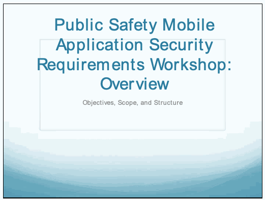
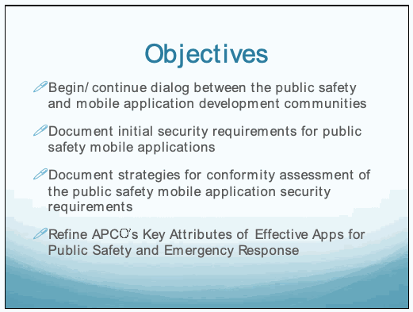
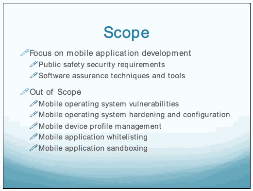
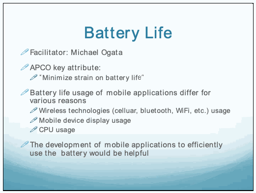
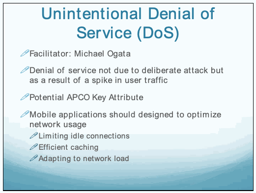
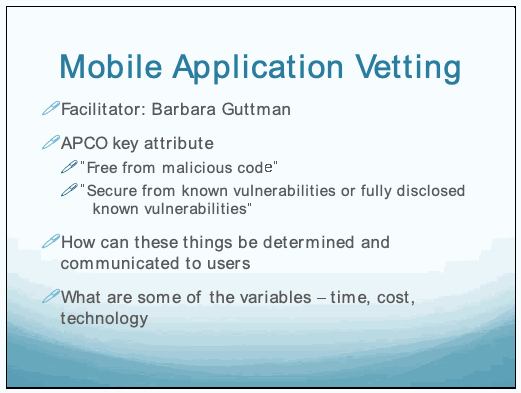
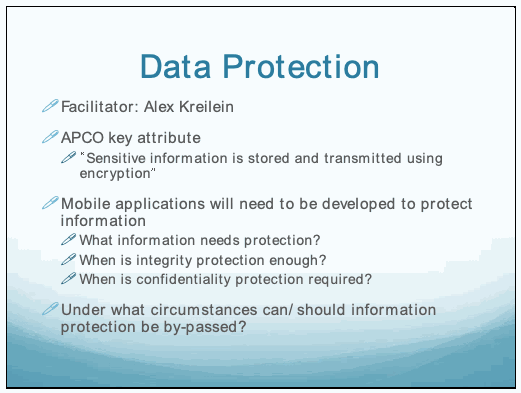
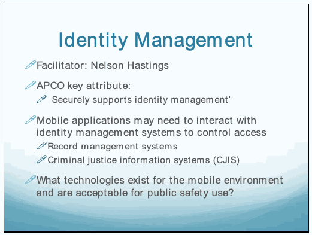

NIST IR 8018 日本語訳
英語タイトル : Public Safety Mobile Application Security Requirements Workshop Summary日本語タイトル : 公共安全向けモバイルアプリケーションのセキュリティ要件に関するワークショップの概要
公開日 : 2015-01-22
原文URL : https://csrc.nist.gov/pubs/ir/8018/final
翻訳編集 : 自動生成（有志による非公式の日本語訳）, 原文取得日 : 2026-10-31, 訳文 : 444 / 446 ブロック
[要約] NIST IR 8018 は、2014 年 2 月 25 日に APCO International が FirstNet および商務省と協力して開催した、公共安全向けモバイルアプリケーションのセキュリティ要件に関する半日のワークショップで得られた意見をまとめた報告書です。ワークショップには、公共安全の実務者、モバイルアプリケーション開発者、業界の専門家、政府関係者が参加しました。目的は、公共安全コミュニティに関連するモバイルアプリケーションのセキュリティ要件の初期セットを特定し、文書化することであり、範囲は、モバイルアプリケーション開発者が影響を及ぼせる開発プロセスに限られました。本書は、バッテリー寿命、意図しないサービス拒否（DoS）、モバイルアプリケーションの審査、データ保護、位置情報、アイデンティティ管理の各分科会の議論を整理しています。
PDF から抽出した原文のうち 1 ブロックは原本との照合待ちです。
PDF p.2: 抽出できる文字が少ないため OCR または画像の照合が必要
PDF p.8: 抽出できる文字が少ないため OCR または画像の照合が必要
PDF p.42: 抽出できる文字が少ないため OCR または画像の照合が必要
PDF p.43: 抽出できる文字が少ないため OCR または画像の照合が必要
PDF p.44: 抽出できる文字が少ないため OCR または画像の照合が必要
PDF p.45: 抽出できる文字が少ないため OCR または画像の照合が必要
PDF p.46: 抽出できる文字が少ないため OCR または画像の照合が必要
PDF p.47: 抽出できる文字が少ないため OCR または画像の照合が必要
PDF p.48: 抽出できる文字が少ないため OCR または画像の照合が必要
PDF p.49: 抽出できる文字が少ないため OCR または画像の照合が必要
PDF p.50: 抽出できる文字が少ないため OCR または画像の照合が必要
PDF p.51: 抽出できる文字が少ないため OCR または画像の照合が必要
NISTIR 8018
NISTIR 8018
Public Safety Mobile Application Security Requirements Workshop Summary
公共安全向けモバイルアプリケーションのセキュリティ要件に関するワークショップの概要
Michael Ogata
Barbara Guttman
Nelson Hastings
Michael Ogata
Barbara Guttman
Nelson Hastings
This publication is available free of charge from: http://dx.doi.org/10.6028/NIST.IR.8018
本刊行物は次の場所から無料で入手できます: http://dx.doi.org/10.6028/NIST.IR.8018
［NIST のロゴ。公的な標章のため、この非公式サイトには掲載していません。原本 PDF を参照してください。］
NISTIR 8018
NISTIR 8018
Public Safety Mobile Application Security Requirements Workshop Summary
公共安全向けモバイルアプリケーションのセキュリティ要件に関するワークショップの概要
Michael Ogata
Barbara Guttman
Systems and Software Division
Information Technology Laboratory
Michael Ogata
Barbara Guttman
システム・ソフトウェア部門
情報技術研究所
Nelson Hastings
Computer Security Division
Information Technology Laboratory
Nelson Hastings
コンピュータセキュリティ部門
情報技術研究所
This publication is available free of charge from: http://dx.doi.org/10.6028/NIST.IR.8018
本刊行物は次の場所から無料で入手できます: http://dx.doi.org/10.6028/NIST.IR.8018
January 2015
2015 年 1 月
U.S. Department of Commerce
Penny Pritzker, Secretary
米国商務省
Penny Pritzker 長官
National Institute of Standards and Technology
Willie May, Acting Under Secretary of Commerce for Standards and Technology and Acting Director
米国標準技術研究所
Willie May、NIST 所長代行兼商務次官代行（標準・技術担当）
National Institute of Standards and Technology Internal Report 8018
56 pages (January 2015)
米国標準技術研究所 内部報告書 8018
56 ページ（2015 年 1 月）
This publication is available free of charge from: http://dx.doi.org/10.6028/NIST.IR.8018
本刊行物は次の場所から無料で入手できます: http://dx.doi.org/10.6028/NIST.IR.8018
Certain commercial entities, equipment, or materials may be identified in this document in order to describe an experimental procedure or concept adequately. Such identification is not intended to imply recommendation or endorsement by NIST, nor is it intended to imply that the entities, materials, or equipment are necessarily the best available for the purpose.
本書では、実験の手順や概念を適切に説明するために、特定の商業事業者、装置、または資材を挙げている場合があります。こうした記載は、NIST による推奨や支持を意味するものではなく、挙げられた事業者、資材、または装置がその目的に必ずしも最適であることを意味するものでもありません。
There may be references in this publication to other publications currently under development by NIST in accordance with its assigned statutory responsibilities. The information in this publication, including concepts and methodologies, may be used by Federal agencies even before the completion of such companion publications. Thus, until each publication is completed, current requirements, guidelines, and procedures, where they exist, remain operative. For planning and transition purposes, Federal agencies may wish to closely follow the development of these new publications by NIST.
本刊行物では、NISTが割り当てられた法定責務に従って現在策定中の他の刊行物に言及している場合があります。概念や方法論を含む本刊行物の情報は、そうした関連刊行物が完成する前でも、連邦機関が利用してもよいです。したがって、各刊行物が完成するまでは、現行の要件、ガイドライン、手順が存在する場合には、引き続き有効です。計画および移行のため、連邦機関は、NISTによるこれらの新しい刊行物の策定状況を注意深く追うべきです。
Organizations are encouraged to review all draft publications during public comment periods and provide feedback to NIST. All NIST Computer Security Division publications, other than the ones noted above, are available at http://csrc.nist.gov/publications.
組織は、パブリックコメント期間中にすべてのドラフト刊行物を確認し、NISTにフィードバックを提供することが推奨されています。上記以外のNISTコンピュータセキュリティ部門の刊行物は、すべて http://csrc.nist.gov/publications で入手できます。
Comments on this publication may be submitted to:
本刊行物へのコメントの送付先:
National Institute of Standards and Technology
Attn: Computer Security Division, Information Technology Laboratory
100 Bureau Drive (Mail Stop 8930) Gaithersburg, MD 20899-8930
Email: nistir8018@nist.gov
米国標準技術研究所
宛先: Computer Security Division, Information Technology Laboratory
100 Bureau Drive (Mail Stop 8930) Gaithersburg, MD 20899-8930
電子メール: nistir8018@nist.gov
Reports on Computer Systems Technology
コンピュータシステム技術に関する報告書
The Information Technology Laboratory (ITL) at the National Institute of Standards and Technology (NIST) promotes the U.S. economy and public welfare by providing technical leadership for the Nation’s measurement and standards infrastructure. ITL develops tests, test methods, reference data, proof of concept implementations, and technical analyses to advance the development and productive use of information technology. ITL’s responsibilities include the development of management, administrative, technical, and physical standards and guidelines for the cost-effective security and privacy of other than national security-related information in Federal information systems.
米国標準技術研究所（NIST）の情報技術研究所（ITL）は、国の計測・標準基盤に対する技術的リーダーシップを提供することで、米国の経済と公共の福祉を促進しています。ITLは、情報技術の開発と生産的な利用を進めるために、試験、試験方法、参照データ、概念実証の実装、技術分析を開発しています。ITLの責務には、連邦情報システムにおける国家安全保障関連以外の情報の費用対効果の高いセキュリティとプライバシーのための、管理、事務、技術、物理的な標準およびガイドラインの策定が含まれます。
Abstract
概要
This document captures the input received from the half-day workshop titled “Public Safety Mobile Application Security Requirements” organized by the Association of Public-Safety Communications Officials (APCO) International, in cooperation with FirstNet and the Department of Commerce and held on February 25, 2014. This first-of-its-kind workshop was attended by public safety practitioners, mobile application developers, industry experts, and government officials who contributed their experience and knowledge to provide input in identifying security requirements for public safety mobile applications.
本書は、2014 年 2 月 25 日に、国際公共安全通信担当者協会（Association of Public-Safety Communications Officials、APCO International）が、FirstNet および商務省と協力して開催した、「公共安全向けモバイルアプリケーションのセキュリティ要件」と題する半日のワークショップで得られた意見をまとめたものです。この初めての試みとなるワークショップには、公共安全の実務者、モバイルアプリケーション開発者、業界の専門家、政府関係者が参加し、公共安全向けモバイルアプリケーションのセキュリティ要件を特定するための意見の提供に、それぞれの経験と知識を寄せました。
Acknowledgments
謝辞
This publication was developed as part of the NTIA/NIST Public Safety Communication Research program with sponsorship from the Office for Interoperability and Compatibility (OIC) at the Department of Homeland Security (DHS). The authors would like to thank Jeff Cohen, Jay English, Mark Reddish, and Roger Wespe from Association of Public-Safety Communications Officials (APCO) International, Alex Kreilein from DHS/OEC, as well as the workshop participants for providing valuable feedback on drafts of this document. The authors would like to thank the following organizations for their public comment submissions: Intrado Inc., Secure Access Technologies, and the Mobile EAS Coalition.
本刊行物は、国土安全保障省（DHS）の相互運用性・互換性室（OIC）の支援を受けた、NTIA/NIST の公共安全通信研究プログラムの一環として作成されました。著者らは、本書のドラフトに貴重なフィードバックを寄せてくださった、国際公共安全通信担当者協会（APCO International）の Jeff Cohen、Jay English、Mark Reddish、Roger Wespe、DHS/OEC の Alex Kreilein、およびワークショップの参加者の皆様に感謝します。また、パブリックコメントを提出してくださった次の組織にも感謝します: Intrado Inc.、Secure Access Technologies、Mobile EAS Coalition。
Audience
対象読者
This document is intended for members of the Public Safety community and mobile application developers who are interested in public safety mobile application security.
本書は、公共安全向けモバイルアプリケーションのセキュリティに関心を持つ、公共安全コミュニティの構成員とモバイルアプリケーション開発者を対象としています。
Keywords
キーワード
Public safety; Mobile applications; FirstNet; First responders; Battery life; Denial of service; Application vetting; Data protection; Location information; Identity management;
公共安全; モバイルアプリケーション; FirstNet; ファーストレスポンダー; バッテリー寿命; サービス拒否; アプリケーションの審査; データ保護; 位置情報; アイデンティティ管理;
Trademark Information
商標情報
All product names are registered trademarks or trademarks of their respective companies.
すべての製品名は、それぞれの企業の登録商標または商標です。
Table of Contents
目次
List of Appendices
付録の一覧
1. Introduction
1. はじめに
On February 25, 2014, the Association of Public-Safety Communications Officials (APCO) International, in cooperation with FirstNet and the Department of Commerce held a half-day workshop titled “Public Safety Mobile Application Security Requirements” attended by public safety practitioners, mobile application developers, industry experts, and government officials. In this first-of-its-kind workshop, attendees contributed their experience and knowledge to provide input in identifying security requirements for public safety mobile applications. The following document describes the workshop and captures the input that was received from the workshop attendees. A list of registered workshop attendees can be found in Appendix C.
2014 年 2 月 25 日、国際公共安全通信担当者協会（APCO International）は、FirstNet および商務省と協力して、「公共安全向けモバイルアプリケーションのセキュリティ要件」と題する半日のワークショップを開催しました。このワークショップには、公共安全の実務者、モバイルアプリケーション開発者、業界の専門家、政府関係者が参加しました。この初めての試みとなるワークショップで、参加者は、公共安全向けモバイルアプリケーションのセキュリティ要件を特定するための意見の提供に、それぞれの経験と知識を寄せました。本書は、このワークショップを説明し、ワークショップの参加者から寄せられた意見をまとめたものです。ワークショップの登録参加者のリストは、付録 C にあります。
1.1 Workshop Organizers
1.1 ワークショップの主催者
The Public Safety Mobile Application Security Requirements Workshop was organized and planned by representatives from APCO, FirstNet and the Department of Commerce. Each of the workshop organizers has a vested interest in ensuring that public safety mobile applications are developed to meet the functional, capability, security, and usability needs of the public safety community.
公共安全向けモバイルアプリケーションのセキュリティ要件に関するワークショップは、APCO、FirstNet、商務省の代表者が主催し、計画しました。各ワークショップ主催者は、公共安全向けモバイルアプリケーションが、公共安全コミュニティの機能、能力、セキュリティ、ユーザビリティのニーズを満たすように開発されることに強い関心を持っています。
APCO is the world’s oldest and largest organization of public safety communications professionals. Its members include state and local employees of law enforcement, fire, and emergency medical service departments, as well as 9-1-1 Public Safety Answering Points (PSAPs) and emergency operations centers. APCO serves public safety communications practitioners by providing professional development, technical assistance, advocacy, training, and outreach. In addition, APCO is an American National Standards Institute (ANSI) accredited standards developer.
APCO は、公共安全通信の専門家による、世界で最も歴史が古く、最大の組織です。会員には、法執行機関、消防、救急医療サービスの各部門の州および地方の職員のほか、9-1-1 公共安全応答ポイント（PSAP）や緊急オペレーションセンターが含まれます。APCO は、専門能力の開発、技術支援、アドボカシー、トレーニング、アウトリーチを提供することで、公共安全通信の実務者を支援しています。加えて、APCO は、米国国家規格協会（ANSI）の認定を受けた標準策定機関です。
On April 23, 2013, APCO launched the online Application Community (AppComm), a collection of mobile applications related to public safety and emergency response for use by the general public and first responders. AppComm includes a catalog of more than 180 applications sortable by category (fire, emergency medical services, police, etc.) and function (situational awareness, educational tools, disaster, etc.). The site serves as the single, trusted forum to learn about existing applications, rate and comment on applications, suggest ideas for new apps, and provide feedback on a variety of application-related issues. In addition, AppComm has resources for developers of mobile applications for public safety such as a list of Key Attributes for Public Safety and Emergency Response (Key Attributes), which is described in greater detail in Section 1.3.
2013 年 4 月 23 日、APCO は、一般市民とファーストレスポンダーが利用する、公共安全と緊急対応に関連するモバイルアプリケーションの集合である、オンラインのアプリケーションコミュニティ（AppComm）を立ち上げました。AppComm には、区分（消防、救急医療サービス、警察など）と機能（状況認識、教育ツール、災害など）で並べ替えられる、180 を超えるアプリケーションのカタログが含まれています。このサイトは、既存のアプリケーションについて知り、アプリケーションを評価してコメントし、新しいアプリの案を提案し、アプリケーションに関するさまざまな問題についてフィードバックを提供するための、信頼できる単一のフォーラムとして機能しています。加えて、AppComm には、公共安全と緊急対応の主要属性（Key Attributes）のリストなど、公共安全向けモバイルアプリケーションの開発者のための情報があります。主要属性については、1.3 節で詳しく説明します。
FirstNet is an independent authority within the Department of Commerce’s National Telecommunications and Information Administration (NTIA) charged with building, operating, and maintaining the first interoperable nationwide wireless broadband network based on Long Term Evolution (LTE) dedicated to public safety. A major benefit of an LTE based interoperable nationwide wireless broadband network is the ability to deliver multimedia data (text, video, and voice) to public safety communication devices using mobile applications. Since mobile application technology will be part of the nationwide wireless broadband network for public safety, it is important to understand the impact (including security implications) the technology may have on the network.
FirstNet は、商務省の国家電気通信情報庁（NTIA）内にある独立した機関であり、Long Term Evolution（LTE）に基づく、公共安全専用の、相互運用可能な初の全国規模のワイヤレスブロードバンドネットワークを構築、運用、保守する責任を負っています。LTE に基づく、相互運用可能な全国規模のワイヤレスブロードバンドネットワークの大きな利点は、モバイルアプリケーションを使って、公共安全通信デバイスにマルチメディアデータ（テキスト、動画、音声）を配信できることです。モバイルアプリケーション技術は、公共安全向けの全国規模のワイヤレスブロードバンドネットワークの一部になるため、この技術がネットワークに与えうる影響（セキュリティ上の影響を含む）を理解することが重要です。
In addition to FirstNet, the Department of Commerce is home to a joint program run by NTIA and the National Institute of Standards and Technology (NIST) called the Public Safety Communications Research (PSCR) program. PSCR performs research, development, testing, and evaluation to foster nationwide public safety communications interoperability on behalf of their sponsors at the Department of Homeland Security (DHS) Office of Interoperability and Compatibility (OIC)/ Office of Emergency Communication (OEC) and FirstNet. Working with public safety organizations (e.g., APCO and the
商務省には、FirstNet に加えて、NTIA と米国標準技術研究所（NIST）が運営する、公共安全通信研究（PSCR）プログラムと呼ばれる共同プログラムがあります。PSCR は、スポンサーである、国土安全保障省（DHS）の相互運用性・互換性室（OIC）／緊急通信室（OEC）および FirstNet に代わって、全国規模の公共安全通信の相互運用性を促進するための研究、開発、試験、評価を行っています。公共安全の組織（たとえば、APCO や
National Public Safety Telecommunications Council (NPSTC)), PSCR draws on public safety communications requirements provided by public safety practitioners to ground their efforts in the needs of the public safety community. In 2013, PSCR began cyber security research efforts related to public safety communications including public safety mobile application security. The public safety mobile application security effort focuses on improving the mobile application development process, specifically the mobile application testing tools, by understanding and collecting the security requirements relevant to the public safety community.
全米公共安全通信協議会（NPSTC））と協力し、PSCR は、公共安全の実務者が提供する公共安全通信の要件を活用して、公共安全コミュニティのニーズに根ざした取り組みを行っています。2013 年に、PSCR は、公共安全向けモバイルアプリケーションのセキュリティを含む、公共安全通信に関連するサイバーセキュリティ研究の取り組みを開始しました。公共安全向けモバイルアプリケーションのセキュリティの取り組みは、公共安全コミュニティに関連するセキュリティ要件を理解して収集することにより、モバイルアプリケーションの開発プロセス、特にモバイルアプリケーションの試験ツールの改善に重点を置いています。
1.2 Purpose and Scope of the Workshop
1.2 ワークショップの目的と範囲
The public safety community is composed of various different disciplines, such as law enforcement, firefighters, and emergency medical technicians, with a unique public service mission implying the need for different mobile application security requirements from the general public. The purpose of the Public Safety Mobile Application Security Requirements Workshop was to identify and document an initial set of mobile application security requirements relevant to the public safety community.
公共安全コミュニティは、法執行機関、消防士、救急救命士など、さまざまな職種で構成されており、独自の公共サービスの使命を持つため、一般市民とは異なるモバイルアプリケーションのセキュリティ要件が必要になります。公共安全向けモバイルアプリケーションのセキュリティ要件に関するワークショップの目的は、公共安全コミュニティに関連するモバイルアプリケーションのセキュリティ要件の初期セットを特定し、文書化することでした。
Some of the public safety mobile application security requirements may be addressed using techniques after the application is deployed. The following are a few examples of these techniques: mobile device profile management, mobile application whitelisting, scanning the mobile device for installed malware, and network security. Since these techniques are highly dependent on the mobile application’s operating environment and outside the control of the mobile application developer, these techniques were considered outside the scope of this workshop.
公共安全向けモバイルアプリケーションのセキュリティ要件の一部は、アプリケーションが展開された後の技術を使って対処できる場合があります。これらの技術の例には、モバイルデバイスのプロファイル管理、モバイルアプリケーションのホワイトリスト化、モバイルデバイスにインストールされたマルウェアのスキャン、ネットワークセキュリティがあります。これらの技術は、モバイルアプリケーションの運用環境に大きく依存し、モバイルアプリケーション開発者の制御の及ばないものであるため、本ワークショップの範囲外とされました。
Instead, the scope of the workshop focused on how the public safety mobile application security requirements might be addressed as part of the application development process that can be influenced by mobile application developers. Using software assurance techniques to mitigate mobile application software vulnerabilities is one way public safety security requirements could be addressed as part of the mobile application development process.
その代わりに、ワークショップの範囲は、公共安全向けモバイルアプリケーションのセキュリティ要件を、モバイルアプリケーション開発者が影響を及ぼせるアプリケーション開発プロセスの一部として、どのように満たせるかに焦点を当てました。ソフトウェア保証の技術を使ってモバイルアプリケーションソフトウェアの脆弱性を緩和することは、公共安全のセキュリティ要件を、モバイルアプリケーションの開発プロセスの一部として満たす方法の 1 つです。
1.3 Summary of APCO Key Attributes
1.3 APCO の主要属性の概要
APCO’s Key Attributes of Effective Apps for Public Safety and Emergency Response describes a working set of considerations for all public safety mobile applications. The document limits its scope to mobile applications intended for use on mobile devices (such as smartphones and tablets). It identifies twelve categories that define what makes an effective mobile application. The following 10 categories were chosen as discussion topics for the workshop:
APCO の「Key Attributes of Effective Apps for Public Safety and Emergency Response」は、すべての公共安全向けモバイルアプリケーションに関する考慮事項の作業用セットを説明しています。この文書は、範囲を、モバイルデバイス（スマートフォンやタブレットなど）での使用を意図したモバイルアプリケーションに限定しています。効果的なモバイルアプリケーションを定義する 12 の区分を特定しています。ワークショップの議論のトピックとして、次の 10 の区分が選ばれました。
1.Operability
1.操作性
2.User Support
2.ユーザーサポート
3.Security
3.セキュリティ
4.Privacy/Confidentiality
4.プライバシー／機密性
5.Content
5.コンテンツ
6.Location Information
6.位置情報
7.User Experience
7.ユーザーエクスペリエンス
8.Communicating with 9-1-1
8.9-1-1 との通信
9.Sending Data to PSAPS and Public Communications Centers
9.PSAP と公共通信センターへのデータの送信
10.Interface with PSAPs and Public Safety Communications Centers
10.PSAP および公共安全通信センターとのインタフェース
A presentation of APCO’s Key Attributes was provided to the workshop attendees and can be found in Appendix F.
APCO の主要属性に関する発表資料は、ワークショップの参加者に提供されており、付録 F にあります。
1.4 Workshop Description
1.4 ワークショップの説明
The half-day workshop was set up as an interactive event where the public safety community could describe mobile application security requirements relevant to them to the mobile application experts that attended the workshop. The workshop consisted of three sessions: a welcome and background session, two facilitated breakout discussion sessions, and a wrap-up session.
この半日のワークショップは、公共安全コミュニティが、自分たちに関連するモバイルアプリケーションのセキュリティ要件を、ワークショップに参加したモバイルアプリケーションの専門家に説明できる、対話型のイベントとして設定されました。ワークショップは、3 つのセッション、すなわち、歓迎と背景のセッション、進行役を置いた 2 回の分科会での議論のセッション、まとめのセッションで構成されました。
The welcome and background session provided attendees with the overall objectives, scope, and structure of the workshop. In addition, a brief overview of the mobile application topics to be discussed in the breakout sessions was provided and some initial discussions were had. The presentations provided to the workshop attendees can be found in Appendix F.
歓迎と背景のセッションでは、参加者に、ワークショップ全体の目的、範囲、構成が示されました。加えて、分科会で議論されるモバイルアプリケーションのトピックの概要が簡単に示され、最初の議論が行われました。ワークショップの参加者に提供された発表資料は、付録 F にあります。
The following mobile application topics were identified before the workshop for discussion based on APCO’s Key Attributes document as well as other important topics being discussed in the mobile application space:
次のモバイルアプリケーションのトピックが、APCO の主要属性の文書と、モバイルアプリケーション分野で議論されているその他の重要なトピックに基づいて、ワークショップの前に、議論のために特定されました。
•Battery Life
•バッテリー寿命
•Unintentional Denial of Service (DoS)
•意図しないサービス拒否（DoS）
•Mobile Application Vetting
•モバイルアプリケーションの審査
•Location Information
•位置情報
•Data Protection
•データ保護
•Identity Management
•アイデンティティ管理
The overview was followed by two 75-minute breakout sessions during which the attendees were divided into two groups. Attention was made to keep each of the groups as diverse as possible by distributing developers and first responders evenly between the groups. During each session, each group was asked to discuss three of the mobile applications topics. This allowed for all attendees to weigh in on each of the six topics through the course of the workshop. Each session was framed by example first responder scenarios as well as questions to stimulate discussion. This material was provided to attendees prior to the workshop and can be found in Appendix E.
概要の後に、75 分間の分科会が 2 回行われ、その間、参加者は 2 つのグループに分けられました。各グループの構成ができるだけ多様になるよう、開発者とファーストレスポンダーを両グループに均等に配分するよう配慮しました。各セッションでは、各グループが、モバイルアプリケーションに関する 3 つのトピックについて議論するよう求められました。これにより、ワークショップを通じて、すべての参加者が 6 つのトピックすべてについて意見を述べることができました。各セッションでは、議論を促す質問と、ファーストレスポンダーのシナリオ例が提示されました。この資料は、ワークショップの前に参加者に提供されており、付録 E にあります。
The facilitators of the breakout session encouraged participants to provide their insight on the pre-identified security requirements as well as solicited input of other possible security requirements that were important to public safety but not initially identified.
分科会の進行役は、あらかじめ特定されたセキュリティ要件について参加者の見解を求めるとともに、公共安全にとって重要でありながら当初は特定されていなかった、ほかのセキュリティ要件についても意見を求めました。
During the wrap up session, a workshop facilitator provided a brief discussion of the events and afforded attendees one last opportunity to express their insights on the various topics. In addition, the attendees were informed of the development of a white paper (this document) to capture the results of the workshop and that meeting participants would have an opportunity to review the document before final publication.
まとめのセッションでは、ワークショップの進行役が、イベントについて簡単に論じ、参加者に、さまざまなトピックについて見識を述べる最後の機会を提供しました。加えて、参加者には、ワークショップの結果をまとめるホワイトペーパー（本書）が作成されることと、会議の参加者が最終版の公開前に文書をレビューする機会があることが伝えられました。
1.5 Document Structure
1.5 文書の構成
The remainder of this document captures the results of the discussion and provides recommended paths forward as well as refinements and additions to APCO Key Attributes document. For each of the topics identified before the workshop, there is a section identifying the existing APCO key attribute associated with the topic, a summary of the breakout session discussion of the topic, possible next steps that could be explored related to the topic, and possible refinements and additions to the list of APCO key attributes (if any). The document concludes with suggested paths forward.
本書の残りの部分は、議論の結果をまとめ、今後の進め方の推奨のほか、APCO の主要属性の文書の精緻化と追加を示します。ワークショップの前に特定された各トピックについて、そのトピックに関連する既存の APCO の主要属性を特定する節、そのトピックに関する分科会での議論の概要、そのトピックに関連して検討できる次のステップの候補、および（ある場合は）APCO の主要属性のリストの精緻化と追加の候補があります。文書は、提案する今後の進め方で締めくくります。
2. Battery Life
2. バッテリー寿命
2.1 Existing Key Attribute
2.1 既存の主要属性
•Minimal strain on battery life
•バッテリー寿命への負荷が最小限であること
2.2 Breakout Session Summary
2.2 分科会の概要
An unpowered device cannot aid a first responder in fulfilling their mission. Therefore understanding the power draw of an application on a mobile device is vital when choosing which applications are deployed for use on FirstNet. Measuring battery impact is a non-trivial exercise. An application’s battery impact can be influenced by its architecture, host operating system, and host hardware. While the battery impact of applications may be mitigated as battery hardware improves or through the use of auxiliary power solutions, the issue of battery use will remain relevant. Furthermore, some organizations may rely on mobile devices that come from extra-organizational sources. Battery technology may remain an unknown factor in these Bring Your Own Device (BYOD) environments.
電源が入らないデバイスは、ファーストレスポンダーが任務を果たす助けになりません。したがって、FirstNet で使用するために展開するアプリケーションを選ぶ際には、モバイルデバイス上でのアプリケーションの消費電力を理解することが不可欠です。バッテリーへの影響を測定することは、容易ではありません。アプリケーションのバッテリーへの影響は、そのアーキテクチャ、ホストのオペレーティングシステム、ホストのハードウェアによって左右される場合があります。アプリケーションのバッテリーへの影響は、バッテリーハードウェアの向上や補助電源ソリューションの使用によって緩和される場合がありますが、バッテリー使用の問題は引き続き重要です。さらに、組織によっては、組織外から持ち込まれたモバイルデバイスに依存する場合があります。こうした Bring Your Own Device（BYOD）環境では、バッテリー技術が未知の要因のままである場合があります。
First responders will stress their devices in ways which differ from consumer mobile device users. Depending on their circumstances, some may be operating in areas with impaired network integrity. They may have special requirements for location awareness and GPS. Firefighters can be exposed to extreme temperatures. Others may need to stream high quality video or, in the case of an incident commander, consume multiple video streams. The availability of potentially numerous live data streams which will be made available on FirstNet will present additional challenges.
ファーストレスポンダーは、一般消費者向けのモバイルデバイスのユーザーとは異なる形で、デバイスに負荷をかけます。状況によっては、ネットワークの完全性が損なわれた地域で活動する場合があります。位置認識と GPS について、特別な要件を持つ場合もあります。消防士は、極端な温度にさらされる場合があります。高品質な動画をストリーミングする必要がある人もおり、現場指揮官の場合は、複数の動画ストリームを視聴する必要があります。FirstNet で利用可能になると見込まれる、潜在的に多数のライブデータストリームが利用できることは、さらなる課題をもたらします。
The demands on first responder mobile devices will vary with the role of the first responder and their environment. Field agents may require up to twelve or more hours of battery life, while incident responders may be tethered to a power source. Some first responders may require constant usage of their device’s screen whereas others may use their devices as simple radios.
ファーストレスポンダーのモバイルデバイスに対する要求は、ファーストレスポンダーの役割と環境によって異なります。現場の要員は 12 時間以上のバッテリー寿命を必要とする場合がありますが、事案対応者は電源につながれている場合があります。ファーストレスポンダーの中には、デバイスの画面を常時使用する必要がある人もいれば、デバイスを単純な無線機として使う人もいます。
When selecting applications for use on FirstNet, first responders need the ability to both mitigate an application’s battery impact and compare competing application’s battery impact. Various tools, methodologies, and metrics exist for measuring application battery impact. These include analytic techniques that attempt to address application inefficiencies for remediation by developers. There are also techniques that attempt to assign quantitative consumption scores to applications. Further work needs to be done to evaluate their effectiveness and appropriateness for use in public safety.
FirstNet で使用するアプリケーションを選ぶ際に、ファーストレスポンダーには、アプリケーションのバッテリーへの影響を緩和する能力と、競合するアプリケーションのバッテリーへの影響を比較する能力の両方が必要です。アプリケーションのバッテリーへの影響を測定するために、さまざまなツール、方法論、指標が存在します。これらには、開発者による是正のために、アプリケーションの非効率性に対処しようとする分析技術が含まれます。アプリケーションに定量的な消費スコアを割り当てようとする技術もあります。それらの有効性と、公共安全での使用への適切さを評価するには、さらなる作業が必要です。
To both prepare and adapt to the multitude of circumstances faced by first responders, public safety applications should allow for remote configuration of their power consumption. This configuration can come from two primary sources. The first comes in the form of a power management profile tailored for a first responder’s specific needs. For example, a firefighter may have very different power needs from a police officer. Power management profiles for a first responder’s specific needs can be applied to a device prior to it entering the field. Applications that expose themselves to this profile could adjust their behavior by changing their network interactions, processing requirements, or shutting themselves off completely.
ファーストレスポンダーが直面する多数の状況に備えて適応するために、公共安全向けアプリケーションは、消費電力のリモート設定を可能にすべきです。この設定は、主に 2 つの発生源からもたらされます。1 つ目は、ファーストレスポンダーの特定のニーズに合わせた電源管理プロファイルの形でもたらされます。たとえば、消防士の電力ニーズは、警察官の電力ニーズとは大きく異なる場合があります。ファーストレスポンダーの特定のニーズに合わせた電源管理プロファイルは、デバイスが現場に入る前に、デバイスに適用できます。このプロファイルに対応するアプリケーションは、ネットワークとのやり取り、処理要件を変更するか、完全に自らを停止することで、動作を調整できます。
The second method of remote power management takes the form of an on-demand control made by a centralized authority like an incident commander. It was made clear during the proceedings that this level of power consumption control is vital as device power management is likely out of scope for first responders as they carry out their respective duties. Work in this space needs to be done to evaluate the technical feasibilities of these requirements as their implications may be out of scope for this document.
リモートでの電源管理の 2 つ目の方法は、現場指揮官などの中央の権限者が行うオンデマンドの制御の形をとります。デバイスの電源管理は、ファーストレスポンダーがそれぞれの任務を遂行する中では、おそらく対応できないため、このレベルの消費電力の制御が不可欠であることが、議事の中で明確になりました。これらの要件の技術的な実現可能性を評価するには、この分野での作業が必要です。その影響が本書の範囲外である可能性があるためです。
2.3 Next Steps
2.3 次のステップ
•Evaluate the effectiveness of existing metrics for battery usage. If no suitable metric exists, the public safety community may need to establish one.
•バッテリー使用の既存指標の有効性を評価します。適切な指標が存在しない場合、公共安全コミュニティが指標を確立する必要が生じる可能性があります。
•Evaluate the effectiveness of power management profiles based on different first responder roles.
•ファーストレスポンダーの役割ごとの電源管理プロファイルの有効性を評価します。
•Evaluate the feasibility of remote power management.
•リモートでの電源管理の実現可能性を評価します。
2.4 APCO Key Attribute Refinement and Additions
2.4 APCO の主要属性の精緻化と追加
•Applications should report their battery impact using accurate battery metrics.
•アプリケーションは、正確なバッテリー指標を使って、バッテリーへの影響を報告すべきです。
•Battery intensive applications should be dynamically configurable to adjust their power needs. Possible options include:
•バッテリーを多く消費するアプリケーションは、電力ニーズを調整できるよう、動的に構成できるべきです。考えられる選択肢は次のとおりです。
•User control
•ユーザーによる制御
•Role/mission based power management profiles
•役割／任務に基づく電源管理プロファイル
•Real time remote control to meet situational demands
•状況の要求に応じたリアルタイムのリモート制御
3. Unintentional Denial of Service (DoS)
3. 意図しないサービス拒否（DoS）
3.1 Exiting Key Attribute
3.1 既存の主要属性
None
なし
3.2 Breakout Session Summary
3.2 分科会の概要
Much like the battery life discussion, the topic of unintentional denial of service became a conversation of how to manage potentially limited resources. This topic is further complicated as the exact limitations of the FirstNet LTE deployment are still unknown and likely to change from deployment to deployment and situation to situation. This uncertainty, combined with the previous experiences of public safety with non-LTE commercial networks, has left the first responder community interested in how FirstNet will perform when stressed. Workshop participants voiced concern on the impact of multitudes of first responders saturating local cells with data such as voice, location and of most concern, video. Video upload will likely place the most strain on FirstNet and is one of the easiest network demands to conceptualize. Participants envisioned many scenarios involving multiple video streams being made available to incident commanders during an emergency.
バッテリー寿命の議論と同様に、意図しないサービス拒否の話題は、限られている可能性のあるリソースをどのように管理するかという議論になりました。この話題は、FirstNet の LTE 展開における正確な制約がまだ不明であり、展開や状況ごとに変わる可能性が高いことから、さらに複雑になっています。この不確実性と、公共安全分野が LTE 以外の商用ネットワークで経験してきたことから、ファーストレスポンダーのコミュニティは、負荷がかかったときに FirstNet がどのように機能するかに関心を持っています。ワークショップの参加者は、多数のファーストレスポンダーが、音声、位置情報、そして特に懸念される動画などのデータでローカルセルを飽和させることの影響について懸念を表明しました。動画のアップロードは FirstNet に最も大きな負荷をかける可能性が高く、ネットワークへの要求として最も想像しやすいものの1つです。参加者は、緊急時に複数の動画ストリームを現場指揮官が利用できるようにする、多くのシナリオを想定しました。
The group consensus was a call for remote monitoring of network traffic and remote management of bandwidth consumers. This would allow incident commanders to identify and mitigate applications that consume an inappropriate amount of network resources. Furthermore, it would allow dynamically stratifying network users by the current importance of their data in order to parcel out network bandwidth.
グループの合意は、ネットワークトラフィックのリモート監視と、帯域幅を消費するもののリモート管理を求めるものでした。これにより、現場指揮官は、不適切な量のネットワークリソースを消費しているアプリケーションを特定して、緩和できるようになります。さらに、ネットワークの帯域幅を配分するために、ネットワークユーザーを、そのデータの現時点での重要度によって動的に階層化できるようになります。
The central question is what mechanisms, or combination thereof, will control the throttling of FirstNet devices. The Quality of Service (QoS) features built into LTE may serve to remediate some network congestion issues on FirstNet. It is unclear if they can provide the on-demand level of granular control first responders might need.
中心的な問いは、FirstNet デバイスのスロットリングを、どのようなメカニズム、またはその組み合わせが制御するのか、ということです。LTE に組み込まれたサービス品質（QoS）機能は、FirstNet のネットワーク輻輳の問題の一部を是正する役に立つ可能性があります。ファーストレスポンダーが必要とする可能性のある、オンデマンドの詳細な制御のレベルを、それらの機能が提供できるかどうかは明らかではありません。
3.3 Next Steps
3.3 次のステップ
•Identify and explain to public safety community how to use FirstNet efficiently in terms of network throughput.
•ネットワークスループットの観点から、FirstNet を効率的に使用する方法を特定し、公共安全コミュニティに説明します。
•Discover the real world network load limitations of LTE deployments.
•LTE の展開における、実環境でのネットワーク負荷の限界を明らかにします。
•Evaluate the applicability/appropriateness of vendor QoS features for use in on demand first responder network control.
•ファーストレスポンダーのオンデマンドのネットワーク制御での使用に対する、ベンダーの QoS 機能の適用可能性／適切さを評価します。
3.4 APCO Key Attribute Refinement and Additions
3.4 APCO の主要属性の精緻化と追加
•Applications must prove they use the network in an efficient and responsible manner.
•アプリケーションは、ネットワークを効率的かつ責任ある方法で使用していることを証明しなければなりません。
4. Mobile Application Vetting
4. モバイルアプリケーションの審査
4.1 Existing Key Attributes
4.1 既存の主要属性
•Free from malicious code
•悪意のあるコードが含まれていないこと
•Secure from known vulnerabilities, or fully disclose known vulnerabilities
•既知の脆弱性に対して安全であること、または既知の脆弱性を完全に開示すること
4.2 Breakout Session Discussion Summary
4.2 分科会での議論の概要
The breakout session focused on the need to have apps tested by a reputable source. As with other potentially life critical software, it is vital that the software be reliable and secure. There are two primary needs in app vetting. The first is to address vetting for apps intended for use by first responders and the second is for those intended for use by the public (referred to as crowd-serving apps, to not confuse public safety and the general public).
分科会は、信頼できる機関によるアプリの試験の必要性に焦点を当てました。生命に関わる可能性のある他のソフトウェアと同様に、ソフトウェアの信頼性が高く、安全であることが不可欠です。アプリの審査には主に2つのニーズがあります。1つ目はファーストレスポンダー向けアプリの審査に対応することであり、2つ目は一般市民向けアプリの審査に対応することです（公共安全と一般市民を混同しないよう、後者をクラウドサービング型アプリと呼びます）。
For first responder apps, the most pressing need is to have a vetting process that focuses on attributes that are unique or especially important to the public safety community, such as those laid out in this document.
ファーストレスポンダー向けのアプリでは、最も差し迫ったニーズは、本書で示すような、公共安全コミュニティに固有であるか、特に重要である属性に焦点を当てた審査プロセスを持つことです。
There is a potential disconnect between the stringent needs of the public safety communication system and the free-flowing development and use of apps on mobile phones. Users expect to use apps to meet specific needs. This presents both a significant management challenge and a technical/procedural challenge to vet apps that the public safety community may find useful. It has been shown to be a very effective means of bringing in new apps and ideas to “crowd source” them to the entire app development community. To be useful to the community, there needs to be a registry of apps that describes their ability to meet the public safety requirements profile. AppComm could serve this need.
公共安全通信システムの厳格なニーズと、携帯電話上のアプリの自由な開発および使用との間には、乖離が生じる可能性があります。ユーザーは、特定のニーズを満たすためにアプリを使うことを期待します。このことは、公共安全コミュニティが有用と考えるアプリを審査するうえで、重大な管理上の課題と、技術的／手続的な課題の両方をもたらします。新しいアプリとアイデアをアプリ開発コミュニティ全体にクラウドソーシングすることは、新しいものを取り込む非常に効果的な手段であることが示されています。コミュニティにとって有用なレジストリにするには、公共安全の要件プロファイルを満たす能力を記述したアプリのレジストリが必要です。AppComm はこのニーズを満たせる可能性があります。
Some public safety organizations may require that only apps complying with some set of public safety-relevant characteristics can be used. To be cost effective, it is generally best to develop a profile and for an organization to certify products as meeting that profile. This makes it easy for app developers to build to the profile and, therefore, meet the need of their intended users.
公共安全の組織の中には、公共安全に関連する一連の特性に準拠したアプリのみを使用できると要求する組織もあります。費用対効果を高めるには、一般に、プロファイルを策定し、組織がそのプロファイルを満たす製品を認証することが最善です。これにより、アプリ開発者がプロファイルに沿って構築しやすくなり、その結果として、意図したユーザーのニーズを満たせます。
Some public safety organizations will use this registry to pick apps that best meet their needs at the best price and not limit themselves to a specific profile.
公共安全の組織の中には、このレジストリを使って、特定のプロファイルに限定することなく、最適な価格で、自らのニーズに最もよく合うアプリを選ぶ組織もあります。
To meet these agencies’ needs, the registry needs to list capabilities and limitations in a clear and consistent manner. This gives public safety organizations the ability to make cost benefit tradeoffs to meet their highest priority needs within budgetary constraints.
これらの機関のニーズを満たすには、レジストリが、能力と制約を明確かつ一貫した形で列挙する必要があります。これにより、公共安全の組織は、予算上の制約の中で、最優先のニーズを満たすために、費用対効果のトレードオフを判断できます。
The main building blocks of an app vetting infrastructure are:
アプリ審査基盤の主な構成要素は次のとおりです。
•Public safety related requirements
•公共安全に関連する要件
•Test protocols to characterize whether and to what extent an app meets the requirements
•アプリが要件をどの程度まで満たすか、あるいは満たすかどうかを特徴づけるための試験プロトコル
•Testing of apps and listing test results on a registry
•アプリの試験と、レジストリへの試験結果の掲載
•Public safety profiles
•公共安全プロファイル
•Certifying organizations
•認証組織
There is a second concern related to apps for first responders based on general aspects of software quality. Software quality determines whether an app is likely to fail and whether its presence harms security in some way.
ファーストレスポンダー向けのアプリには、ソフトウェア品質の一般的な側面に基づく、2 つ目の懸念もあります。ソフトウェア品質は、アプリが障害を起こす可能性が高いかどうかと、アプリの存在が何らかの形でセキュリティを損なうかどうかを決定します。
Like many apps used by diverse communities, public safety needs apps that do not cause security or other software quality failures. Since there are so many communities with similar needs, the marketplace has responded with numerous app vetting services. The public safety community can leverage these to meet their needs and does not need to develop a unique solution.
多様なコミュニティが使う多くのアプリと同様に、公共安全には、セキュリティやその他のソフトウェア品質上の障害を引き起こさないアプリが必要です。同様のニーズを持つコミュニティが非常に多いため、市場は、数多くのアプリ審査サービスで応えてきました。公共安全コミュニティは、これらを活用してニーズを満たすことができ、独自のソリューションを開発する必要はありません。
For crowd-serving apps, it is important for the public safety community to help educate the general public on how an app should interact with the public safety system. App developers need to be made aware of what data is appropriate to deliver to public safety systems and what mechanisms are appropriate for that delivery. This is something the public safety community understands and may not be widely known by public safety application developers.
一般市民向けアプリでは、アプリが公共安全システムとどのようにやり取りすべきかについて、公共安全コミュニティが一般市民への啓発を支援することが重要です。アプリ開発者には、公共安全システムにどのようなデータを提供するのが適切か、またその提供にはどのようなメカニズムが適切かを知らせる必要があります。これは公共安全コミュニティには理解されていますが、公共安全アプリケーションの開発者には広く知られていない場合があります。
Crowd-serving apps present a different challenge for vetting. Some requirements are universal, such as whether the app accurately describes its privacy policy. For example, does the app transmit identifying information, location information, or other demographics?
一般市民向けアプリは、審査にあたって異なる課題をもたらします。アプリが自らのプライバシーポリシーを正確に記述しているかどうかなど、普遍的な要件もあります。たとえば、アプリは識別情報、位置情報、その他の属性情報を送信するか、といったことです。
Beyond this, a critical issue is how both public safety practitioner centric and crowd-serving apps send and receive information from the public safety system. The public is likely to miss nuances between an app that communicates with a security center and one that communicates with a 9-1-1 center. There is an APCO standard in development that is focused on providing a uniform interface for apps to public safety communications systems. On March 4, 2013, APCO filed a Project Initiation Notification to develop an ANSI standard for applications that interface with public safety communications centers and public safety responders. The completion of this standard is an important step toward ensuring that these applications are efficient, interoperable, and reliable.
これに加えて、重要な問題は、公共安全の実務者を中心としたアプリと一般市民向けアプリの両方が、公共安全システムとの間で情報をどのように送受信するかです。一般市民は、セキュリティセンターと通信するアプリと、9-1-1 センターと通信するアプリの微妙な違いを見逃す可能性があります。アプリと公共安全通信システムとの間に統一されたインタフェースを提供することに焦点を当てた APCO 標準が策定中です。2013 年 3 月 4 日、APCO は、公共安全通信センターおよび公共安全の対応者とインタフェースを持つアプリケーションに関する ANSI 標準を策定するため、Project Initiation Notification を提出しました。この標準の完成は、これらのアプリケーションの効率性、相互運用性、信頼性を確保するうえで重要な一歩です。
4.3 Next Steps
4.3 次のステップ
•Establishment of a testing and certification infrastructure for apps for public safety.
•公共安全向けアプリの試験と認証の基盤を確立します。
•Development of guidelines for how the public safety community can take advantage of software quality and security work in the general mobile app marketplace.
•公共安全コミュニティが、一般的なモバイルアプリ市場でのソフトウェア品質とセキュリティの取り組みを活用する方法に関するガイドラインを策定します。
•Completion of a standard interface to public safety, which may include an API, providing developers with uniform interaction with public safety systems.
•公共安全への標準インタフェースを完成させます。これには、開発者が公共安全システムと統一された形でやり取りできるようにする API が含まれる場合があります。
•Identifying and documenting methods of communicating with the public how apps actually interact with the public safety system.
•アプリが実際に公共安全システムとどのようにやり取りするかを、一般市民に伝える方法を特定し、文書化します。
5. Data Protection
5. データ保護
5.1 Existing Key Attributes
5.1 既存の主要属性
•Sensitive information is stored and transmitted using encryption
•機微な情報は、暗号化を用いて保存および送信されること
5.2 Breakout Session Discussion Summary
5.2 分科会での議論の概要
First responders will access, transmit, and store various types of information using applications on their mobile devices. Data protection is divided into three categories: preventing information from unauthorized disclosure (confidentiality), guarding information from unauthorized modification (integrity), and providing access to information when it is needed (availability). In general, the information owner determines the data protection requirements for their information. These requirements may be motivated by law, such as the Health Insurance Portability and Accountability Act (HIPAA), as well as policy requirements like the Federal Bureau of Investigation’s (FBI) Criminal Justice Information Services (CJIS) Security Policy. Understanding the data protection requirements for the information being accessed and created by a public safety mobile application is crucial for both application developers as well as first responder end users.
ファーストレスポンダーは、モバイルデバイス上のアプリケーションを使って、さまざまな種類の情報にアクセスし、送信し、保存します。データ保護は、情報の不正な開示の防止（機密性）、情報の不正な変更からの保護（完全性）、必要なときに情報へのアクセスを提供すること（可用性）という3つの区分に分けられます。一般に、情報の所有者が、その情報に対するデータ保護要件を決定します。これらの要件は、医療保険の携行性と責任に関する法律（HIPAA）などの法律や、連邦捜査局（FBI）の刑事司法情報サービス（CJIS）セキュリティポリシーなどのポリシー要件によって生じる場合があります。公共安全向けモバイルアプリケーションがアクセスし、作成する情報に対するデータ保護要件を理解することは、アプリケーション開発者とファーストレスポンダーのエンドユーザーの双方にとって重要です。
The law enforcement representatives at the workshop indicated that CJIS defines the standard for the protection of their data via the FBI’s CJIS Security Policy. They indicated that the FBI allows for agencies to self-certify to the CJIS requirements and agencies are themselves responsible for their compliance to the requirements.
ワークショップに参加した法執行機関の代表者は、CJIS が、FBI の CJIS セキュリティポリシーを通じて、データ保護の標準を定義していると述べました。また、FBI は、機関が CJIS の要件に対して自己認証することを認めており、機関自身が要件への準拠に責任を負うと述べました。
It was the consensus of the workshop that app developers should be presented with a baseline set of data protection capabilities/functionality that represents the minimum need for public safety. A baseline set of data protection would need a public safety information classification system or framework. In order to protect data consistently, developers need to know what information can/should be shared, whom can the information be shared with, and how the sharing is controlled. Some information can be shared with anyone. However, protecting the integrity and availability of public information is important. Sensitive information may only be intended for authorized recipients making the confidentiality, integrity, and availability of this data critical. Developers may stand to benefit from unified data dictionaries describing first responder-specific information types and the data protection requirements for each.
ワークショップでは、アプリ開発者に対し、公共安全にとっての最低限のニーズを表すデータ保護の能力／機能のベースラインセットを提示すべきであるとの合意が得られました。データ保護のベースラインセットには、公共安全の情報分類システムまたは枠組みが必要になります。データを一貫して保護するには、開発者は、どの情報を共有できるか／共有すべきか、その情報を誰と共有できるか、また共有をどのように制御するかを知る必要があります。誰とでも共有できる情報もあります。ただし、公開情報の完全性と可用性を保護することは重要です。機微な情報は、権限を持つ受信者のみを対象としている場合があり、そのため、このデータの機密性、完全性、可用性が重要になります。開発者は、ファーストレスポンダー固有の情報の種類と、それぞれのデータ保護要件を記述した統一データ辞書から利益を得られる場合があります。
Participants also acknowledged overzealous data protection may introduce availability, performance, and cost that will interfere with or inhibit the ability of first responders to carry out their missions. Developers need a good understanding of how availability, performance, and cost relate to each other in order to balance them and create an effective, useful application.
参加者は、過剰なデータ保護が可用性、性能、コストに影響し、ファーストレスポンダーが任務を遂行する能力を妨げたり抑制したりする可能性も認めました。開発者は、可用性、性能、コストが互いにどのように関係するかを十分に理解し、それらのバランスをとって効果的で有用なアプリケーションを作成する必要があります。
To organize and provide a framework for how availability, performance, and cost relate to each other, participants posited the notion of having different data protection tiers based on the types of data protection provided. Mobile application developers could then choose the tier their application would be comply with. Mobile application users could select applications with the appropriate data protection for their intended use.
可用性、性能、コストが互いにどのように関係するかを整理し、その枠組みを提供するため、参加者は、提供されるデータ保護の種類に基づいて異なるデータ保護階層を設けるという考え方を提案しました。これにより、モバイルアプリケーション開発者は、自らのアプリケーションが準拠するデータ保護階層を選択できます。モバイルアプリケーションのユーザーは、意図する用途に適したデータ保護を備えたアプリケーションを選択できます。
Another issue that needs to be discussed is the exchange of information between the public and first responders and the related data protection requirements.
議論する必要があるもう 1 つの問題は、一般市民とファーストレスポンダーの間の情報の交換と、それに関連するデータ保護要件です。
With respect to implementing data protection mechanisms, the developers at the workshop expressed a strong desire for a specification of the needed functionality/capability as opposed to a software developer kit/application programming interface (SDK/API). Participants were concerned mandating specific third party SDK/APIs would stifle application developers. However, the central concern is then how can applications be vetted/verified for compliance. SDKs are good for compliance as once the SDK is reviewed it can be reused; however a specification is needed to review each application for compliance. Still there was consensus from participants that an official data protection specification is the best solution moving forward.
データ保護メカニズムの実装について、ワークショップに参加した開発者は、ソフトウェア開発キット／アプリケーションプログラミングインタフェース（SDK/API）ではなく、必要な機能／能力を規定する仕様を強く望みました。参加者は、特定のサードパーティ製SDK/APIを義務付けると、アプリケーション開発者の活動を阻害するのではないかと懸念しました。しかし、中心的な懸念は、アプリケーションの準拠をどのように審査／検証できるかです。SDKは、一度レビューすれば再利用できるため、準拠確認に有用ですが、個々のアプリケーションの準拠をレビューするには仕様が必要です。それでも、今後は公式のデータ保護仕様が最善策であるという点で、参加者の意見は一致していました。
As many public safety mobile applications will keep sensitive data in the mobile device’s memory, the question about how to protect data in memory from bad/malicious applications was raised. There are many potential solutions for addressing this concern. However, most are outside the scope of the application and the application developer’s control.
多くの公共安全向けモバイルアプリケーションは、機微なデータをモバイルデバイスのメモリ内に保持するため、メモリ内のデータを不正または悪意のあるアプリケーションからどのように保護するかという問題が提起されました。この懸念に対処する方法は数多くあります。ただし、そのほとんどはアプリケーションの範囲外であり、アプリケーション開発者の制御の及ばないものです。
5.3 Next Steps
5.3 次のステップ
•Develop a data protection specification for use by developers.
•開発者が使用するデータ保護仕様を策定します。
•Develop a data dictionary describing different first responder specific data types and their data protection requirements.
•さまざまなファーストレスポンダー固有のデータ型と、そのデータ保護要件を記述したデータ辞書を策定します。
•Develop a tiered data protection hierarchy for use in determining an application’s level of data protection.
•アプリケーションのデータ保護のレベルを判断するために使う、階層化されたデータ保護の体系を策定します。
5.4 APCO Key Attribute Refinement and Additions
5.4 APCO の主要属性の精緻化と追加
•Applications will declare what data they handle.
•アプリケーションは、自らが扱うデータを宣言します。
•Application will declare what data protection they implement.
•アプリケーションは、自らが実装するデータ保護を宣言します。
6. Location Information
6. 位置情報
6.1 Existing Key Attributes
6.1 既存の主要属性
•App discloses what location information is being provided, whether the GPS/location services of the device needs to be enabled, how location information is being determined (cell ID, GPS, AGPS), and whether 2D or 3D
•アプリは、どの位置情報が提供されるか、デバイスの GPS／位置情報サービスを有効にする必要があるか、位置情報がどのように判定されるか（セル ID、GPS、AGPS）、および 2D か 3D か
•Adequate safeguards are in place to protect privacy, confidentiality
•プライバシーと機密性を保護するために、十分な保護対策が講じられていること
6.2 Breakout Session Discussion Summary
6.2 分科会での議論の概要
Public safety mobile applications will have access to and use location information provided by mobile devices to enhance their utility to public safety practitioners. Location information is actually a special subset of the more general topic of mobile application data protection. Location information, however, has the potential to have more immediate and severe implications to first responders.
公共安全向けモバイルアプリケーションは、公共安全の実務者にとっての有用性を高めるために、モバイルデバイスが提供する位置情報にアクセスし、それを使用します。位置情報は、実際には、モバイルアプリケーションのデータ保護というより一般的なトピックの特別な部分集合です。ただし、位置情報は、ファーストレスポンダーに、より直接的で深刻な影響をもたらす可能性があります。
In general, location information provided to mobile applications will either be two- or three-dimensional. There are at least three factors that will influence to what extent public safety should use the location information being provided: accuracy, integrity, and confidentiality. Location information can be derived using various sources and techniques with each providing varying levels of accuracy. The integrity of the location information may need to be protected so that false location information is not provided that interferes with a timely response. Under certain circumstances, location information being generated may need to be kept confidential so as to not endanger public safety personnel. That said; seamless, efficient, and ubiquitous location communication stands to both empower and enrich public safety as they seek to fulfill their mission. Both public safety mobile application developers and users need to understand how accurate location information is and how that data is protected (integrity and confidentiality) in order to create and use applications in the most effective and secure manner.
一般に、モバイルアプリケーションに提供される位置情報は、2 次元か 3 次元のいずれかです。提供される位置情報を公共安全がどの程度利用すべきかを左右する要因は、少なくとも 3 つあります。精度、完全性、機密性です。位置情報はさまざまな情報源と技術を使って導出でき、それぞれが異なるレベルの精度を提供します。迅速な対応を妨げる誤った位置情報が提供されないように、位置情報の完全性を保護する必要がある場合があります。特定の状況では、公共安全要員を危険にさらさないよう、生成される位置情報を機密に保つ必要がある場合があります。とはいえ、シームレスで効率的かつ広く利用できる位置情報通信は、公共安全が任務を遂行するうえで、その能力を高め、活動を充実させる可能性があります。公共安全向けモバイルアプリケーションの開発者とユーザーは、アプリケーションを最も効果的かつ安全な方法で作成し使用するために、位置情報がどの程度正確か、そのデータがどのように保護されているか（完全性と機密性）を理解する必要があります。
During the breakout discussions, various themes emerged about location information. Both breakout groups expressed concern over who should have control of location tracking services. It was suggested that both end-users and supervisors should have the ability to turn location tracking on and off. This provides end-users with the flexibility to address needs in the field while simultaneously giving supervisors the ability to better support the end-user while they may otherwise be engaged with other duties. This feature also provides for administering mobile devices by allowing the location tracking capability to be configured without touching every device.
分科会での議論の中で、位置情報に関するさまざまなテーマが浮かび上がりました。2 つの分科会のグループはどちらも、位置追跡サービスを誰が制御すべきかについて懸念を表明しました。エンドユーザーと監督者の両方が、位置追跡のオンとオフを切り替えられるべきだと提案されました。これにより、エンドユーザーには現場のニーズに対応する柔軟性が与えられ、同時に、エンドユーザーがほかの任務に従事している場合でも、監督者がエンドユーザーをより適切に支援できるようになります。この機能は、すべてのデバイスに触れることなく位置追跡機能を構成できるようにすることで、モバイルデバイスの管理にも役立ちます。
Similar to the notion of who has control over location services, attendees discussed how to control who has access to the location information. This is of particular concern to law enforcement agencies as covert movement can be paramount to both agent safety and mission success.
位置情報サービスを誰が制御するかという考え方と同様に、参加者は、位置情報にアクセスできる人をどのように制御するかを議論しました。これは、秘匿した移動が、要員の安全と任務の成功の両方にとって最も重要になりうるため、法執行機関にとって特に懸念されることです。
With regard to both control and access, applications should, in the very least, make explicit declarations as to their capabilities and intentions.
制御とアクセスの両方に関して、アプリケーションは、少なくとも、自らの能力と意図について明示的に宣言すべきです。
Another theme discussed was the accuracy and freshness of location information. There was agreement that the type of use case, operation, or event being discussed would be a significant factor in determining these requirements. Discussions about what is considered “real-time” for location information was explored including increments of 1 minute, 5 minutes, or best available. Depending on the operational needs, all of these might be acceptable for a given mobile application.
議論されたもう 1 つのテーマは、位置情報の精度と鮮度でした。議論されているユースケース、運用、またはイベントの種類が、これらの要件を決定する重要な要因になるという点で、意見が一致しました。位置情報について「リアルタイム」と見なされるものは何かも検討され、1分ごと、5分ごと、または利用可能な最善の頻度が候補に挙がりました。運用上のニーズによっては、これらのいずれも特定のモバイルアプリケーションにとって許容できる場合があります。
Finally participants examined how location information might be exchanged and used among applications. They expressed concern that there currently is no standard for how mobile applications might transmit their location information. This complicates the ecosystem, not only in the relationship between an application developer and the PSAP, but also between varying first responder organizations that may have the need to collaborate.
最後に、参加者は、位置情報をアプリケーション間でどのように交換し、使用できるかを検討しました。参加者は、モバイルアプリケーションが位置情報を送信する方法の標準が、現時点では存在しないことに懸念を表明しました。これは、アプリケーション開発者と PSAP の間の関係だけでなく、連携する必要がある可能性のあるさまざまなファーストレスポンダーの組織の間でも、エコシステムを複雑にします。
Outside of the realm of mobile applications there exists a body of work relating to the digital exchange of location. Table 6-1 contains a list of existing standards that may serve as starting off points. Further work must be done to evaluate their applicability to the Public Safety space. 1
モバイルアプリケーションの領域の外には、位置のデジタルでの交換に関連する一連の取り組みがあります。表 6-1 には、出発点となりうる既存の標準のリストを示します。公共安全の分野への適用可能性を評価するには、さらなる作業が必要です。1
Table 6-1 - Location Exchange Standards
表 6-1 - 位置情報の交換に関する標準
| Location Exchange Mechanism | Relevant Standards Documents |
|---|---|
| Emergency Incident Data Document (EIDD) |
|
| HELD – HTTP Enabled Location Delivery |
|
| PIDF-LO – Presence Information Data Format Location |
|
| SIP – Session Initiation Protocol |
|
| 位置情報の交換メカニズム | 関連する標準文書 |
|---|---|
| Emergency Incident Data Document (EIDD) |
|
| HELD – HTTP Enabled Location Delivery |
|
| PIDF-LO – Presence Information Data Format Location |
|
| SIP – Session Initiation Protocol |
|
6.3 Next Steps
6.3 次のステップ
•Evaluate and recommend standards for exchanging location information.
•位置情報を交換するための標準を評価し、推奨します。
•Evaluate feasibility of centrally managing location information services.
•位置情報サービスを集中管理する実現可能性を評価します。
6.4 APCO Key Attribute Refinement and Additions
6.4 APCO の主要属性の精緻化と追加
•Application location features must be configurable either by user control, remote management, and/or location/mission-based profiles.
•アプリケーションの位置情報機能は、ユーザーによる制御、リモート管理、または位置情報ベースおよび／または任務ベースのプロファイルによって構成可能でなければなりません。
•Applications should be built with options for location refresh rate: best-available vs. every minute vs. every 5 minutes to suit operational need.
•アプリケーションは、運用上のニーズに合わせて、位置情報の更新頻度（利用可能な最善の間隔、1 分ごと、5 分ごと）の選択肢を備えて構築されるべきです。
•Applications must declare who is getting the location information and make clear what kind of control users have over the location information.
•アプリケーションは、誰が位置情報を受け取っているかを宣言し、ユーザーが位置情報に対してどのような種類の制御を持つかを明確にしなければなりません。
•Applications must declare all location information being gathered and whether that data is transmitted, stored, or both. When location information is transmitted, the application must declare where the location information is being transmitted.
•アプリケーションは、収集しているすべての位置情報と、そのデータが送信されるか、保存されるか、またはその両方かを宣言しなければなりません。位置情報が送信される場合、アプリケーションは、位置情報の送信先を宣言しなければなりません。
7. Identity Management
7. アイデンティティ管理
7.1 Existing Key Attributes
7.1 既存の主要属性
•Securely supports identity management
•アイデンティティ管理を安全にサポートすること
7.2 Breakout Session Discussion Summary
7.2 分科会での議論の概要
First responders may use mobile applications to access network resources and public safety related information such as a CJIS or record management systems (RMS). To enable access control to these resources and information, public safety mobile application developers will need to understand the identity management mechanisms available for them to leverage, and what is practical for use by the public safety practitioners.
ファーストレスポンダーは、モバイルアプリケーションを使って、ネットワークリソースや、CJIS、記録管理システム（RMS）などの公共安全に関連する情報にアクセスする場合があります。これらのリソースと情報に対するアクセス制御を可能にするために、公共安全向けモバイルアプリケーションの開発者は、利用できるアイデンティティ管理のメカニズムと、公共安全の実務者が使ううえで現実的なものを理解する必要があります。
NIST describes identity management as:
NIST は、アイデンティティ管理を次のように説明しています。
The process of managing the identification, authentication, and authorization associated with individuals or entities (devices, processes, etc.)[3]
個人またはエンティティ（デバイス、プロセスなど）に関連する、識別、認証、認可を管理するプロセス[3]
The two factors that influence the assurance of the identities include how well an identity is proofed or vetted and the type(s) of credential (something you know, something you have, or something you are) used by the system. In general, combining the types of credentials used increases assurance and is called multi-factor authentication.
アイデンティティの保証に影響する 2 つの要因は、アイデンティティがどの程度適切に身元確認または審査されているかと、システムが使用するクレデンシャルの種類（知っているもの、持っているもの、本人の特徴）です。一般に、使用するクレデンシャルの種類を組み合わせると、保証が高まり、これは多要素認証と呼ばれます。
Law enforcement representatives discussed how the CJIS verification worked from the user’s point of view. CJIS servers authenticate stationary and mobile device terminals (MDTs) at different levels, with stationary terminals granted a higher access level than their mobile counterparts. IP addresses are used to identify and register individual terminals for access to server resources. Officers that have passed the CJIS certification class then use their fingerprint or other type of credential to access the CJIS terminal.
法執行機関の代表者は、CJIS の検証が、ユーザーの視点からどのように機能するかを議論しました。CJIS サーバーは、据え置き型の端末とモバイルデバイス端末（MDT）を異なるレベルで認証し、据え置き型の端末には、モバイル端末よりも高いアクセスレベルが与えられます。サーバーリソースへのアクセスのために、個々の端末を識別して登録するのに、IP アドレスが使われます。CJIS 認定クラスに合格した警察官は、その後、指紋またはその他の種類のクレデンシャルを使って、CJIS 端末にアクセスします。
This discussion illustrates the need for both device (terminals) and people (users) identities. It was pointed out that having possession of the device was the best credential for access to FirstNet but additional credentials would be needed to actually use the network. Since there are authentication mechanisms (e.g., passwords, PINs, and fingerprint readers) to gain local access to the device, the question about how they might be leveraged by mobile applications was asked.
この議論は、デバイス（端末）とユーザー（人）の両方のアイデンティティが必要であることを示しています。デバイスを所持していることが、FirstNet にアクセスするための最善のクレデンシャルであるものの、実際にネットワークを使用するには追加のクレデンシャルが必要になると指摘されました。デバイスへのローカルアクセスを得るための認証メカニズム（たとえば、パスワード、PIN、指紋リーダー）があるため、それらをモバイルアプリケーションがどのように活用できるかという質問が出されました。
Concerns were voiced about the usability and practically of the authentication mechanisms given public safety’s dynamic operating environment. Emergency responders, for example, may be hindered by requiring two-factor authentication for their applications. During a non-emergency time, it may be acceptable to require authentication before a communication transmission or information request is performed. However, during an emergency event, it might be acceptable to lower the level of authentication or eliminate it all together before a communication transmission or information request is performed. For example, a man-down call might not require any authentication before the transmission is made. In addition, a first responder may not have the time or ability to enter identity credentials (such as a password or PIN) in an emergency situation.
公共安全分野の動的な運用環境を考えると、認証メカニズムのユーザビリティと実用性について懸念が表明されました。たとえば、アプリケーションで二要素認証を要求すると、緊急対応者の妨げになる場合があります。緊急でない時間帯には、通信の送信や情報の要求を実行する前に認証を要求してもよい場合があります。しかし、緊急事態の間は、通信の送信や情報の要求を実行する前に、認証のレベルを下げるか、完全に排除してもよい場合があります。たとえば、要員転倒通報は、送信前に認証を一切必要としない場合があります。加えて、ファーストレスポンダーは、緊急時には、アイデンティティのクレデンシャル（パスワードや PIN など）を入力する時間や能力がない場合があります。
This led to the discussion of a hierarchy or levels of authentication based on the situation; or situational authentication. In order for something like situational authentication to occur, the different categories of situations would need to be defined and standardized as well as acceptable levels of authentication for given operations/functions. Then a mapping between the situation categories and authentication levels for given operations/functions would need to be defined and standardized.
これにより、状況に基づく認証の階層またはレベル、すなわち状況依存認証についての議論につながりました。状況依存認証のようなものを実現するには、状況の異なる区分を定義して標準化するとともに、特定の操作／機能に対して許容される認証のレベルも定義して標準化する必要があります。その後、状況の区分と、特定の操作／機能に対する認証レベルとの対応付けを、定義して標準化する必要があります。
7.3 Next Steps
7.3 次のステップ
•Establish a hierarchy of authentication.
•認証の階層を確立します。
8. Recommendations
8. 推奨事項
8.1 APCO Key Attribute Update Summary
8.1 APCO の主要属性の更新概要
The following is the list of recommendations and requirements resulting from the workshop that should be considered for inclusion in the APCO Key Attribute document:
以下は、ワークショップの結果として得られた、APCO の主要属性の文書に含めることを検討すべき推奨事項と要件のリストです。
•Applications should report their battery impact using accurate battery metrics.
•アプリケーションは、正確なバッテリー指標を使って、バッテリーへの影響を報告すべきです。
•Battery intensive applications should be dynamically configurable to adjust their power needs. Possible options include:
•バッテリーを多く消費するアプリケーションは、電力ニーズを調整できるよう、動的に構成できるべきです。考えられる選択肢は次のとおりです。
•User control,
•ユーザーによる制御、
•Role/mission based power management profiles, and
•役割／任務に基づく電源管理プロファイル、および
•Real time remote control to meet situational demands.
•状況の要求に応じたリアルタイムのリモート制御。
•Applications must prove they use the network in an efficient and responsible manner.
•アプリケーションは、ネットワークを効率的かつ責任ある方法で使用していることを証明しなければなりません。
•Application location features should be configurable either by user control, remote management, or location/mission based profiles.
•アプリケーションの位置情報機能は、ユーザーによる制御、リモート管理、または位置／任務に基づくプロファイルのいずれかによって構成できるべきです。
•Applications should be built with options for location refresh rate: best-available vs. every minute vs. every 5 minutes to suit operational need.
•アプリケーションは、運用上のニーズに合わせて、位置情報の更新頻度（利用可能な最善の間隔、1 分ごと、5 分ごと）の選択肢を備えて構築されるべきです。
•Applications must declare who is getting the location information and make clear what kind of control users have over the location information.
•アプリケーションは、誰が位置情報を受け取っているかを宣言し、ユーザーが位置情報に対してどのような種類の制御を持つかを明確にしなければなりません。
•Applications must declare all information being gathered and whether that data is transmitted, stored, or both. When data is transmitted, the application must declare where the data is being transmitted.
•アプリケーションは、収集しているすべての情報と、そのデータが送信されるか、保存されるか、またはその両方かを宣言しなければなりません。データが送信される場合、アプリケーションは、データの送信先を宣言しなければなりません。
•Application will declare what data protection they implement.
•アプリケーションは、自らが実装するデータ保護を宣言します。
8.2 Further Research Areas
8.2 今後の研究分野
Several activities were identified for further research as possible next steps. The following is the list of possible activities identified from the workshop:
次のステップの候補として、さらなる研究のためにいくつかの活動が特定されました。以下は、ワークショップから特定された活動の候補のリストです。
•Evaluate the effectiveness of existing metrics for battery usage. If no suitable metric exists, the public safety community may need to establish one.
•バッテリー使用量に関する既存の指標の有効性を評価します。適切な指標が存在しない場合は、公共安全コミュニティが指標を確立する必要がある場合があります。
•Evaluate the effectiveness of power management profiles based on different first responder roles.
•ファーストレスポンダーの役割ごとの電源管理プロファイルの有効性を評価します。
•Evaluate the feasibility of remote power management.
•リモートでの電源管理の実現可能性を評価します。
•Identify and explain to the public safety community what it means to use the FirstNet network responsibly in terms of network throughput.
•ネットワークスループットの観点から、FirstNet ネットワークを責任を持って使用することが何を意味するかを特定し、公共安全コミュニティに説明します。
•Discover the real world network load limitations of LTE deployments.
•LTE の展開における、実環境でのネットワーク負荷の限界を明らかにします。
•Evaluate the applicability/appropriateness of vendor QoS features for use in on demand first responder network control.
•ファーストレスポンダーのオンデマンドのネットワーク制御での使用に対する、ベンダーの QoS 機能の適用可能性／適切さを評価します。
•Establish a testing and certification infrastructure for apps for public safety.
•公共安全向けアプリの試験と認証の基盤を確立します。
•Develop guidelines for how the public safety community can take advantage of software quality and security work in the general mobile app marketplace.
•公共安全コミュニティが、一般的なモバイルアプリ市場でのソフトウェア品質とセキュリティの取り組みを活用する方法に関するガイドラインを策定します。
•Specify an API so that app developers can interact with the public safety system.
•アプリ開発者が公共安全システムとやり取りできるように、API を規定します。
•Identify and document methods of communicating with the public how apps actually interact with the public safety system.
•アプリが実際に公共安全システムとどのようにやり取りするかを、一般市民に伝える方法を特定し、文書化します。
•Evaluate and recommend standards for exchanging location information.
•位置情報を交換するための標準を評価し、推奨します。
•Evaluate feasibility of centrally managing location information services.
•位置情報サービスを集中管理する実現可能性を評価します。
•Develop a data dictionary describing different first responder specific data types and their data protection requirements.
•さまざまなファーストレスポンダー固有のデータ型と、そのデータ保護要件を記述したデータ辞書を策定します。
•Develop a data protection specification for use by developers.
•開発者が使用するデータ保護仕様を策定します。
•Develop a tiered data protection hierarchy for use in determining an application’s level of data protection.
•アプリケーションのデータ保護のレベルを判断するために使う、階層化されたデータ保護の体系を策定します。
•Establish a hierarchy of authentication.
•認証の階層を確立します。
Appendix A—Acronyms
付録 A—頭字語
Selected acronyms and abbreviations used in the guide are defined below.
本書で使用している、主な頭字語と略語を、以下に定義します。
| AGPS | Assisted Global Positioning System |
| ANSI | American National Standards Institute |
| APCO | Association of Public-Safety Communications Officials |
| API | Application Programming Interface |
| BYOD | Bring Your Own Device |
| CJIS | Criminal Justice Information System |
| DHS OIC | Department of Homeland Security Office of Interoperability and Compatibility |
| DHS OEC | Department of Homeland Security Office of Emergency Communication |
| DoS | Denial of Service |
| eNB | Evolved Node B |
| FBI | Federal Bureau of Investigation |
| GPS | Global Positioning System |
| HIPAA | Health Insurance Portability and Accountability Act |
| LTE | Long Term Evolution |
| MDT | Mobile Device Terminals |
| NIST | National Institute of Standards and Technology |
| NPSTC | National Public Safety Telecommunications Council |
| NTIA | National Telecommunications and Information Administration |
| PSAP | Public Safety Access Point |
| PSCR | Public Safety Communication Research |
| QoS | Quality of Service |
| SDK | Software Development Kit |
| VPN | Virtual Private Network |
| AGPS | アシステッド全地球測位システム |
| ANSI | 米国国家規格協会 |
| APCO | 国際公共安全通信担当者協会 |
| API | アプリケーションプログラミングインタフェース |
| BYOD | 個人所有デバイスの業務利用 |
| CJIS | 刑事司法情報システム |
| DHS OIC | 国土安全保障省 相互運用性・互換性室 |
| DHS OEC | 国土安全保障省 緊急通信室 |
| DoS | サービス拒否 |
| eNB | Evolved Node B |
| FBI | 連邦捜査局 |
| GPS | 全地球測位システム |
| HIPAA | 医療保険の携行性と責任に関する法律 |
| LTE | Long Term Evolution |
| MDT | モバイルデバイス端末 |
| NIST | 米国標準技術研究所 |
| NPSTC | 全米公共安全通信協議会 |
| NTIA | 国家電気通信情報庁 |
| PSAP | 公共安全アクセスポイント |
| PSCR | 公共安全通信研究 |
| QoS | サービス品質 |
| SDK | ソフトウェア開発キット |
| VPN | 仮想プライベートネットワーク |
Appendix B—References
付録 B—参考文献
Selected acronyms and abbreviations used in this interagency report are defined below.
本省庁間報告書で使用している、主な頭字語と略語を、以下に定義します。
[ 1 ] Health Insurance Portability and Accountability Act of 1996. Public Law 104-191; http://www.gpo.gov/fdsys/pkg/PLAW-104publ191/html/PLAW-104publ191.htm
[ 1 ] Health Insurance Portability and Accountability Act of 1996. Public Law 104-191; http://www.gpo.gov/fdsys/pkg/PLAW-104publ191/html/PLAW-104publ191.htm
[ 2 ] “Key Attributes of Effective Apps for Public Safety and Emergency Response,” APCO International, 18 Aug. 2013; http://appcomm.org/wp-content/themes/directorypress/thumbs/AppComm_Key_Attributes.pdf
[ 2 ] “Key Attributes of Effective Apps for Public Safety and Emergency Response,” APCO International, 18 Aug. 2013; http://appcomm.org/wp-content/themes/directorypress/thumbs/AppComm_Key_Attributes.pdf
[ 3 ] Nelson Hastings, Joshua Franklin, “Considerations for Identity Management in Public Safety Mobile Networks (DRAFT),”; http://csrc.nist.gov/publications/drafts/nistir-8014/nistir_8014_draft.pdf
[ 3 ] Nelson Hastings, Joshua Franklin, “Considerations for Identity Management in Public Safety Mobile Networks (DRAFT),”; http://csrc.nist.gov/publications/drafts/nistir-8014/nistir_8014_draft.pdf
[ 4 ] U.S. Department of Justice, Criminal Justice Information Services (CJIS) Security Policy, Version 5.3, 4 Aug. 2014. DOI:CJISD-ITS-DOC-08140-5.3
[ 4 ] U.S. Department of Justice, Criminal Justice Information Services (CJIS) Security Policy, Version 5.3, 4 Aug. 2014. DOI:CJISD-ITS-DOC-08140-5.3
Appendix C—Workshop Registration List
付録 C—ワークショップ登録者リスト
The following are the list of workshop attendees and their affiliations.
以下は、ワークショップの参加者とその所属のリストです。
Mark Adams, Northrop Grumman
Scott Agnew, AT&T
Rafael Bezanilla, Palm Beach County (FL) Sheriff's Office
Jeff Bratcher, FirstNet
Jeffery Carl, AT&T
Serena Chan, Institute for Defense Analyses
Jeff Cohen, APCO
Richard Coupland, General Dynamics
Ed Davey, Prince George's County (MD) Police
Donald Denning, City of Boston Office of the CIO
Crista Dexter, Lake County, FL, Sheriff's Office
Jay English, APCO
John Facella, RCC Consultants
Jeff Godin, Badge Buddy
Paul Gomez, Prince George's County (MD) Fire
Traviss Green, Lockheed-Martin
Barbara Guttman, National Institute of Standards and Technology
Terry Hall, APCO Executive Committee
Nelson Hastings, National Institute of Standards and Technology
Doug Havemann, Panasonic
Rob Jones, Lockheed-Martin
David Kahn, Covia Labs
Chris Kachigian, Lockheed-Martin
Britt Kane, Intrepid Networks
Alan Kaplan, Drakontas
Stephen Kennedy, Sumter County (FL) Fire & EMS
Alex Kreilein, Department of Homeland Security
Brent Lee, APCO Executive Committee
Michael McMenamin, 3 Birches Lane, LLC
Dick Mirgon, Public Safety Consultant
Gary Monetti, TASC
Bryan Morgan, Motorola Solutions
Michael Ogata, National Institute of Standards and Technology
Derek Poarch, APCO Executive Committee
Mark Reddish, APCO
Patrik Ringvist, Ericsson
David Rogers, Allogy Interactive
Robin Schmidt, Palm Beach County (FL) Sheriff's Office
Bill Schrier, Washington State Office of the CIO
Gigi Smith, APCO Executive Committee
Jason Stonebraker, Intrepid Networks
Andy Seybold, Andrew Seybold, Inc.
Joseph Wassel, Institute for Defense Analyses
Roger Wespe, APCO
Carl Williams, Harris Corp.
John Wright, APCO Executive Committee
Mark Adams, Northrop Grumman
Scott Agnew, AT&T
Rafael Bezanilla, Palm Beach County (FL) Sheriff's Office
Jeff Bratcher, FirstNet
Jeffery Carl, AT&T
Serena Chan, Institute for Defense Analyses
Jeff Cohen, APCO
Richard Coupland, General Dynamics
Ed Davey, Prince George's County (MD) Police
Donald Denning, City of Boston Office of the CIO
Crista Dexter, Lake County, FL, Sheriff's Office
Jay English, APCO
John Facella, RCC Consultants
Jeff Godin, Badge Buddy
Paul Gomez, Prince George's County (MD) Fire
Traviss Green, Lockheed-Martin
Barbara Guttman, National Institute of Standards and Technology
Terry Hall, APCO Executive Committee
Nelson Hastings, National Institute of Standards and Technology
Doug Havemann, Panasonic
Rob Jones, Lockheed-Martin
David Kahn, Covia Labs
Chris Kachigian, Lockheed-Martin
Britt Kane, Intrepid Networks
Alan Kaplan, Drakontas
Stephen Kennedy, Sumter County (FL) Fire & EMS
Alex Kreilein, Department of Homeland Security
Brent Lee, APCO Executive Committee
Michael McMenamin, 3 Birches Lane, LLC
Dick Mirgon, Public Safety Consultant
Gary Monetti, TASC
Bryan Morgan, Motorola Solutions
Michael Ogata, National Institute of Standards and Technology
Derek Poarch, APCO Executive Committee
Mark Reddish, APCO
Patrik Ringvist, Ericsson
David Rogers, Allogy Interactive
Robin Schmidt, Palm Beach County (FL) Sheriff's Office
Bill Schrier, Washington State Office of the CIO
Gigi Smith, APCO Executive Committee
Jason Stonebraker, Intrepid Networks
Andy Seybold, Andrew Seybold, Inc.
Joseph Wassel, Institute for Defense Analyses
Roger Wespe, APCO
Carl Williams, Harris Corp.
John Wright, APCO Executive Committee
Appendix D—Related Documents
付録 D—関連文書
J. Peterson, A Presence-based GEOPRIV Location Object Format, IETF RFC 4119, December 2005; http://www.ietf.org/rfc/rfc4119
J. Peterson, A Presence-based GEOPRIV Location Object Format, IETF RFC 4119, December 2005; http://www.ietf.org/rfc/rfc4119
J. Polk, B. Rosen and J. Peterson, Location Conveyance for the Session Initiation Protocol, IETF RFC 6442, December 2011; http://tools.ietf.org/html/rfc6442
J. Polk, B. Rosen and J. Peterson, Location Conveyance for the Session Initiation Protocol, IETF RFC 6442, December 2011; http://tools.ietf.org/html/rfc6442
J. Winterbottom, et al. A Location Dereference Protocol Using HTTP-Enabled Location Delivery (HELD), IETF RFC 6753, October 2013; http://tools.ietf.org/html/rfc6753
J. Winterbottom, et al. A Location Dereference Protocol Using HTTP-Enabled Location Delivery (HELD), IETF RFC 6753, October 2013; http://tools.ietf.org/html/rfc6753
J. Winterbottom, et al. GEOPRIV Presence Information Data Format Location Object (PIDF-LO) Usage Clarification, Considerations, and Recommendations, IETF RFC 5491, March 2009; http://tools.ietf.org/html/rfc5491
J. Winterbottom, et al. GEOPRIV Presence Information Data Format Location Object (PIDF-LO) Usage Clarification, Considerations, and Recommendations, IETF RFC 5491, March 2009; http://tools.ietf.org/html/rfc5491
J. Winterbottom, et al. Use of Device Identity in HTTP-Enabled Location Delivery (HELD), IETF RFC 6155, March 2011; http://tools.ietf.org/html/rfc6155
J. Winterbottom, et al. Use of Device Identity in HTTP-Enabled Location Delivery (HELD), IETF RFC 6155, March 2011; http://tools.ietf.org/html/rfc6155
M. Barns, Ed. HTTP-Enabled Location Delivery (HELD), IETF RFC 5985, September 2010; http://tools.ietf.org/rfc/rfc5985
M. Barns, Ed. HTTP-Enabled Location Delivery (HELD), IETF RFC 5985, September 2010; http://tools.ietf.org/rfc/rfc5985
M. Thomson, et al. Revised Civic Location Format for Presence Information Data Format Location Object (PIDF-LO), IETF RFC 5139, February 2008; http://tools.ietf.org/html/rfc5139
M. Thomson, et al. Revised Civic Location Format for Presence Information Data Format Location Object (PIDF-LO), IETF RFC 5139, February 2008; http://tools.ietf.org/html/rfc5139
The National Public Safety Telecommunications Council. (2014,September 30). “Defining Public Safety Grade Systems and Facilities (Final Report)” [Online]. Available: http://www.npstc.org/download.jsp?tableId=37&column=217&id=3066&file=Public_Safety_Grade_Report_140522.pdf
The National Public Safety Telecommunications Council. (2014,September 30). “Defining Public Safety Grade Systems and Facilities (Final Report)” [Online]. 入手先: http://www.npstc.org/download.jsp?tableId=37&column=217&id=3066&file=Public_Safety_Grade_Report_140522.pdf
NENA, APCO, NENA/APCO Emergency Incident Data Document (EIDD) Information Document, NENA/APCO-INF-005, 21 Feb. 2014; https://c.ymcdn.com/sites/www.nena.org/resource/resmgr/Standards/EIDD_INF-005_FINAL_20140221.pdf
NENA, APCO, NENA/APCO Emergency Incident Data Document (EIDD) Information Document, NENA/APCO-INF-005, 21 Feb. 2014; https://c.ymcdn.com/sites/www.nena.org/resource/resmgr/Standards/EIDD_INF-005_FINAL_20140221.pdf
Appendix E—Handout Material
付録 E—配布資料
The following was provided to the attendees before the workshop to provide some scope and context for the discussions to take place during the breakout sessions:
ブレイクアウトセッションで行われる議論の範囲と背景を示すために、ワークショップの前に、参加者に次のものが提供されました。
Expanded Description of Security Topics for Breakout Session Discussions
分科会での議論のためのセキュリティトピックの詳細な説明
I. Battery life issues
I. バッテリー寿命の問題
•APCO Key Attribute “Minimal strain on battery life” (Operability)
•APCO の主要属性「バッテリー寿命への負荷が最小限であること」（操作性）
The quantification of a mobile application’s battery load will be paramount when choosing which applications to deploy in the first responder mobile device infrastructure.
ファーストレスポンダーのモバイルデバイス基盤に展開するアプリケーションを選ぶ際には、モバイルアプリケーションのバッテリー負荷の定量化が最も重要になります。
Example Scenario: Designing the Application Ecosystem for a FEMA Response Team
シナリオ例: FEMA 対応チームのためのアプリケーションエコシステムの設計
A FEMA Urban Search and Rescue Task Force (US&R) is deployed to a building collapse scenario. Field agents are equipped with mobile devices whose suite of mobile applications has been selected to maximize the device’s battery life. Location aware applications, while potentially taxing on battery performance, are allowed on the devices due to the nature of the dangers inherent in fieldwork. Other non-critical applications are designed to sense when to abdicate battery utilization if they detect extra load on the device.
FEMA の都市捜索救助タスクフォース（US&R）が、建物倒壊の現場に展開されます。現場要員は、デバイスのバッテリー寿命を最大化するよう選定された一式のモバイルアプリケーションを搭載したモバイルデバイスを装備しています。位置認識アプリケーションは、バッテリー性能に負担をかける可能性がありますが、現場作業に固有の危険があるため、デバイスでの使用が許可されています。その他の重要度の低いアプリケーションは、デバイスに余分な負荷がかかっていることを検出した場合に、バッテリーの使用を抑えるように設計されています。
Identifying Public Safety’s Needs
公共安全のニーズの特定
1.What are the phases of a response for a building collapse?
1.建物倒壊への対応には、どのようなフェーズがありますか。
2.Who are the players, and what are their respective roles/responsibilities?
2.関係者は誰で、それぞれの役割／責任は何ですか。
3.What is the expected time between charges for each player and scenario?
3.関係者とシナリオごとに、充電間隔はどの程度になると予想されますか。
4.What scenarios require continuous or intensive location identification and tracking?
4.どのシナリオで、継続的または集中的な位置の特定と追跡が必要ですか。
5.What data-intensive applications are most important in the field (e.g. maps, transmission of patient data, floor plans, high resolution photos, video)?
5.現場で最も重要なデータ集約型のアプリケーションは何ですか（たとえば、地図、患者データの送信、フロアプラン、高解像度の写真、動画）。
6.Should high availability applications (data or processing intensive) display adaptive behavior (dial back power needs) if they determine they are placing too much strain on a device?
6.可用性の高いアプリケーション（データまたは処理が集約的なもの）は、デバイスに過度の負担をかけていると判断した場合、適応的な動作（電力ニーズの引き下げ）を示すべきですか。
Understanding the Technology Behind the Apps
アプリの背後にある技術の理解
1.Among the data-intensive needs of public safety, which features will place the heaviest drain on a device’s battery?
1.公共安全のデータ集約型のニーズの中で、デバイスのバッテリーを最も大きく消耗させる機能はどれですか。
2.What other types of apps drain the battery quickly?
2.ほかにどのような種類のアプリが、バッテリーを急速に消耗させますか。
3.How much emphasis is placed on battery efficiency during app development?
3.アプリの開発中、バッテリー効率はどの程度重視されていますか。
4.How much consideration is placed on battery impact when choosing apps for deployment?
4.展開するアプリを選ぶ際に、バッテリーへの影響はどの程度考慮されていますか。
5.In what ways can we quantify the battery effect of an application on a device?
5.アプリがデバイスに与えるバッテリーへの影響を、どのような方法で定量化できますか。
a.Verizon ranks popular apps in their store and uses a closed source method of ranking battery performance on a scale from 1 to 5.
a.Verizon は、同社のストアの人気アプリをランク付けしており、バッテリー性能を 1 から 5 の尺度で評価する、非公開の方法を使用しています。
b.AT&T provides an open source tool: ARO for monitoring network usage, Bluetooth usage, and battery consumption for various mobile device platforms.
b.AT&T は、さまざまなモバイルデバイスプラットフォームのネットワーク使用、Bluetooth 使用、バッテリー消費を監視するオープンソースのツール ARO を提供しています。
Potential Requirements
潜在的な要件
1.Scale-down battery-intensive functions whenever possible
1.可能な場合は常に、バッテリーを多く消費する機能を縮小する
a.Allow “austere” modes
a.「緊縮」モードを許可する
b.Avoid duplicative tracking when devices are sure to be in close proximity
b.デバイスが近接していることが確実な場合は、重複した追跡を避ける
2.Provide estimates of battery life for each operational choice and create easily-consumable guidance for maximizing battery life in an app
2.運用上の選択肢ごとにバッテリー寿命の推定値を提供し、アプリでバッテリー寿命を最大化するための、利用しやすいガイダンスを作成する
II. Location information issues
II. 位置情報の問題
•APCO Key Attribute “App discloses what location information is being provided…” and “Adequate safeguards are in place to protect privacy, confidentiality” (Location Information)
•APCO の主要属性「アプリは、どの位置情報を提供しているかを開示する…」と「プライバシーと機密性を保護するために、十分な保護対策が講じられていること」（位置情報）
Mobile public safety applications will have access to location information to enhance their utility. In general, the location information provided to mobile applications is two-dimensional. However, some public safety applications may require three-dimensional location information such as conducting a search within a building or on a mountainside.
公共安全向けのモバイルアプリケーションは、有用性を高めるために、位置情報にアクセスします。一般に、モバイルアプリケーションに提供される位置情報は 2 次元です。ただし、公共安全向けのアプリケーションの中には、建物内や山腹での捜索を行う場合など、3 次元の位置情報を必要とするものもあります。
Location information provided to mobile devices originates from different sources leveraging various techniques that result in different accuracy levels for the location information.
モバイルデバイスに提供される位置情報は、さまざまな技術を活用する複数の情報源に由来し、その結果、位置情報の精度もさまざまです。
The extent that public safety relies on the location information may vary based on the source, accuracy, and integrity (i.e. continued validity) of the information. In addition, the location information may be considered sensitive information requiring it to be confidentiality protected.
公共安全が位置情報に依拠する程度は、情報源、精度、完全性（すなわち、継続的な有効性）によって異なる場合があります。さらに、位置情報は機微情報とみなされ、機密性が保護される必要がある場合があります。
The following two scenarios describe how location information might be used by a public safety mobile application:
次の 2 つのシナリオは、公共安全向けのモバイルアプリケーションが位置情報をどのように使用するかを説明するものです。
As part of a covert operation, an undercover officer is using a mobile application on his/her mobile device to provide operation information (such as video, voice, location, etc.) back to the operation’s command center.
秘匿作戦の一環として、潜入捜査官が、モバイルデバイス上のモバイルアプリケーションを使って、作戦情報（動画、音声、位置など）を作戦の指揮センターに返しています。
During a response to a building fire, a firefighter uses a mobile application on his/her mobile device to navigate through the building as well as provide firefighter location to the fire incident commander.
建物火災への対応中、消防士が、モバイルデバイス上のモバイルアプリケーションを使って、建物内を移動し、同時に消防士の位置を火災現場の指揮官に提供します。
Identifying Public Safety’s Needs
公共安全のニーズの特定
1.Under what conditions does location information need to be confidential? (also see Data Protection, below)
1.どのような条件で、位置情報を機密にする必要がありますか。（下記のデータ保護も参照してください）
2.What are considered “adequate safeguards” for location information privacy/confidentiality?
2.位置情報のプライバシー／機密性にとって、何が「十分な保護対策」とみなされますか。
3.Under what conditions does location information need to be kept private?
3.どのような条件で、位置情報を非公開に保つ必要がありますか。
4.Does the source of the location information need to be verified?
4.位置情報の情報源を検証する必要がありますか。
5.Does the integrity of the location information need to be verified?
5.位置情報の完全性を検証する必要がありますか。
6.Does the source, or technique to determine, the location information suggest how the information will be used?
6.位置情報の情報源、または位置を判定する技術は、その情報がどのように使われるかを示唆しますか。
7.What public safety mobile apps benefit using two-dimensional location information?
7.どの公共安全向けモバイルアプリが、2次元の位置情報を利用することで恩恵を受けますか。
8.What public safety mobile apps benefit using three-dimensional location information?
8.どの公共安全向けモバイルアプリが、3次元の位置情報を利用することで恩恵を受けますか。
9.Understanding the Technology Behind the Apps
9.アプリの背後にある技術の理解
The following are some common techniques mobile devices use to obtain location information and their associated accuracies:
以下は、モバイルデバイスが位置情報を取得するために使う一般的な技術と、それに関連する精度です。
a.Global Position System (GPS) capabilities within a mobile device can provide an accuracy within about 3 meters when outdoors,
a.モバイルデバイスに搭載された全地球測位システム（GPS）機能は、屋外では約3メートル以内の精度を提供できます。
b.Location based service providers provide location information with various levels of accuracy based on techniques they choose to use, and
b.位置情報サービスプロバイダは、使用する技術の選択に応じて、さまざまな精度の位置情報を提供します。
c.The communications network can provide location information to the mobile device using triangulation techniques with accuracy within about 1200 meters using three towers, and in the near future LTE proximity services will improve accuracy by leveraging more of the communication infrastructure, specifically other mobile devices.
c.通信ネットワークは、3 つの基地局を使った三角測量の技術を用いて、約 1200 メートル以内の精度で、モバイルデバイスに位置情報を提供できます。また、近い将来、LTE の近接サービスが、通信インフラストラクチャのより多く、特にほかのモバイルデバイスを活用することで、精度を向上させます。
Potential Requirements
潜在的な要件
1.Apps that track first responder devices must ensure that location information is not made available to unauthorized users.
1.ファーストレスポンダーのデバイスを追跡するアプリは、位置情報が権限のないユーザーに提供されないようにしなければなりません。
2.App users and procuring agencies should have the ability to toggle location tracking on and off based on operational and administrative needs.
2.アプリのユーザーと調達機関は、運用上および管理上のニーズに応じて、位置追跡をオンまたはオフに切り替えられるようにすべきです。
3.App providers should clearly describe measures to protect users’ location information.
3.アプリのプロバイダは、ユーザーの位置情報を保護するための対策を、明確に説明すべきです。
III. Unintentional Denial of Service (DoS) Issues
III. 意図しないサービス拒否（DoS）の問題
•This describes a situation where access to a website or server is denied, not due to a deliberate attack, but as a result of a sudden spike in user traffic. (Candidate for a new APCO Key Attribute.)
•これは、ウェブサイトまたはサーバーへのアクセスが、意図的な攻撃によるものではなく、ユーザートラフィックの急増の結果として拒否される状況を説明するものです。（新しい APCO 主要属性の候補）
Example Scenario:
シナリオ例:
A large earthquake has occurred in a major metropolitan area. Traffic across the cell infrastructure spikes in the following ways:
大都市圏で大規模な地震が発生しました。セルラーインフラストラクチャ全体のトラフィックが、次の形で急増します。
Application Layer: 911 call centers are flooded with requests from 911-communication-equipped applications (for example, texting to 9-1-1).
アプリケーション層: 911 通報センターには、911 通信機能を備えたアプリケーション（たとえば、9-1-1 へのテキストメッセージ送信）からの要求が殺到します。
The Access Network: Due to the quake, first responders are now clustered in areas carrying out their respective duties (firemen may be working as teams engaged in rescue operations, police may be working in teams to direct traffic). Because of the increase in network traffic and the geographic proximity of first responders, local eNBs (cellular base stations) are now under increased strain.
アクセスネットワーク: 地震により、ファーストレスポンダーは、それぞれの任務を遂行するために特定の地域に集中しています（消防士は救助活動に従事するチームとして活動し、警察官は交通を誘導するチームとして活動している場合があります）。ネットワークトラフィックの増加と、ファーストレスポンダーの地理的な近接性により、ローカルの eNB（セルラー基地局）には、現在、より大きな負担がかかっています。
Identifying Public Safety’s Needs
公共安全のニーズの特定
1.How must multiple 911 apps reporting the same incident be controlled or triaged?
1.同じ事案を報告する複数の 911 アプリを、どのように制御またはトリアージしなければなりませんか。
2.What kind of information must flow from responders in the field, and from what levels (policeman, fireman, chiefs, incident commanders)?
2.現場の対応者から、どのような情報が、どのレベル（警察官、消防士、指揮官、現場指揮官）から流れなければなりませんか。
3.What data-intensive applications are most important in the field (e.g. maps, transmission of patient data, floor plans, high resolution photos, video)?
3.現場で最も重要なデータ集約型のアプリケーションは何ですか（たとえば、地図、患者データの送信、フロアプラン、高解像度の写真、動画）。
Understanding the Technology Behind the Apps
アプリの背後にある技術の理解
1.How can applications equipped to communicate with 911 play well on the network to prevent 911 call center infrastructures from collapsing under the weight of heavy use?
1.911 と通信する機能を備えたアプリケーションは、利用の集中によって 911 通報センターのインフラストラクチャが崩壊するのを防ぐために、ネットワーク上でどのように適切に動作できますか。
2.How should applications that mean to send data across the network act in order to “play nice” so as not to overload and shutdown the cell network?
2.ネットワーク越しにデータを送信する意図のあるアプリケーションは、セルラーネットワークの過負荷や停止を避けるため、「行儀よく」どのように動作すべきですか。
3.Should public safety mobile applications be stratified by their data input/output requirements in order to better judge their distribution amongst the first responder community (i.e. should instances of applications with higher data throughput requirements not be deployed on as many devices).
3.ファーストレスポンダーのコミュニティ内での配布を、より適切に判断するために、公共安全向けモバイルアプリケーションを、そのデータ入出力の要件によって階層化すべきですか（すなわち、データスループットの要件がより高いアプリケーションのインスタンスは、それほど多くのデバイスに展開すべきではないのですか）。
4.Could apps “detect” strain on the network and reduce their impact on the network (e.g. video streaming applications down-scaling their video quality)?
4.アプリは、ネットワークへの負担を「検出」して、ネットワークへの影響を減らせますか（たとえば、動画ストリーミングアプリケーションが動画の品質を下げるなど）。
Potential Requirements
潜在的な要件
1.Apps that interface with public safety users should incorporate measures to minimize severe strain on communications networks.
1.公共安全のユーザーと連携するアプリは、通信ネットワークへの深刻な負担を最小限に抑える対策を組み込むべきです。
IV. Data protection
IV. データ保護
•APCO Key Attribute “Sensitive information is stored and transmitted using encryption” (Security)
•APCO の主要属性「機微な情報は、暗号化を用いて保存および送信されること」（セキュリティ）
Mobile public safety application developers will need to understand the protection requirements of the data being accessed as well as for the data created by the application in order to properly protect it.
公共安全向けモバイルアプリケーションの開発者は、データを適切に保護するために、アクセスされるデータと、アプリケーションが作成するデータの保護要件を理解する必要があります。
Since the mobile applications may be accessing remote databases and storing data on the mobile device, data protection may need to cover the data in transit as it travels across a communications network and at rest while stored on the mobile device.
モバイルアプリケーションは、リモートのデータベースにアクセスしたり、モバイルデバイス上にデータを保存したりする場合があるため、データ保護は、通信ネットワークを経由する転送中のデータと、モバイルデバイスに保存されている保管中のデータの両方を対象とする必要がある場合があります。
Data protection can be broken down into the following general categories: protecting data from unauthorized disclosure (or confidentiality), protecting data from modification (or integrity), and being able to access the data when it is needed (or availability).
データ保護は、次の一般的な区分に分けられます。データを不正な開示から保護すること（または機密性）、データを変更から保護すること（または完全性）、データが必要なときにアクセスできること（または可用性）です。
In general, the owner of the data being accessed and/or created determines the data protection requirements. The data owner’s decision may be motivated by legal as well as policy requirements. For example, the Health Insurance Portability and Accountability Act (HIPAA) [1] governs the data protection requirements related to health information/records. Similarly, the FBI’s Criminal Justice Information Services (CJIS) Security Policy governs the data protection requirements related to Criminal Justice Information (CJI).
一般に、アクセスされる、および／または作成されるデータの所有者が、データ保護要件を決定します。データ所有者の判断は、法的要件や、ポリシー要件によって動機づけられる場合があります。たとえば、医療保険の携行性と責任に関する法律（HIPAA）[1] は、医療情報／記録に関連するデータ保護要件を規定しています。同様に、FBI の刑事司法情報サービス（CJIS）セキュリティポリシーは、刑事司法情報（CJI）に関連するデータ保護要件を規定しています。
Example scenarios:
シナリオ例:
During a traffic stop, an officer determines the need to run the driver’s identity through a CJIS system to determine if the driver has any current outstanding warrants or criminal history, so the officer uses a mobile application to access a CJIS system and receive the results of the query.
交通取り締まりの際、警察官は、運転者に現在の未執行の令状や犯罪歴があるかどうかを判断するために、運転者の身元を CJIS システムで照会する必要があると判断し、モバイルアプリケーションを使って CJIS システムにアクセスし、照会結果を受け取ります。
During a medical emergency response, a paramedic uses a mobile application to collect a patient’s information (name, age, gender, age, etc.) as well as to monitor the patient’s vital signs (heart rate, blood pressure, temperature, etc.). In addition, the mobile application forwards the patient information to the hospital the patient will be taken to.
医療上の緊急事態への対応中、救急救命士は、モバイルアプリケーションを使って、患者の情報（氏名、年齢、性別、年齢など）を収集し、患者のバイタルサイン（心拍数、血圧、体温など）を監視します。加えて、モバイルアプリケーションは、患者が搬送される病院に患者情報を転送します。
Identifying Public Safety’s Needs
公共安全のニーズの特定
1.What is considered sensitive data?
1.機微なデータとは何だとみなされますか。
2.Is sensitive data sufficiently defined by legal/regulatory compliance requirements?
2.機微なデータは、法令／規制への準拠要件によって十分に定義されていますか。
3.How is sensitive data identified and labeled?
3.機微なデータは、どのように識別され、ラベル付けされますか。
4.How is the type of data protection needed/required determined?
4.必要な／求められるデータ保護の種類は、どのように決定されますか。
5.What types of data protection are needed/required?
5.どのような種類のデータ保護が、必要または求められますか。
6.What types of data need/require privacy protection? (such as personnel information, user/agency data)
6.どのような種類のデータに、プライバシー保護が必要または求められますか（たとえば、職員情報、ユーザー／機関のデータ）。
Understanding the Technology Behind the Apps
アプリの背後にある技術の理解
1.How do methods and levels of data protection impact app performance?
1.データ保護の方法とレベルは、アプリの性能にどのように影響しますか。
Potential Requirements
潜在的な要件
1.Privacy policy is easily accessible and contains readily understandable terms.
1.プライバシーポリシーには容易にアクセスでき、容易に理解できる用語で書かれています。
2.Personal information, including location information, stored on the device is not accessed or shared unless privacy policy states otherwise.
2.デバイスに保存された、位置情報を含む個人情報は、プライバシーポリシーに別段の定めがない限り、アクセスも共有もされません。
3.Any use of data extracted from the user or public safety agency through operation of the app other than for the necessary functionality of the app is fully disclosed.
3.アプリの動作を通じて、ユーザーまたは公共安全機関から抽出されたデータを、アプリの必要な機能以外の目的で使用する場合は、そのすべてが完全に開示されます。
4.Applications should provide confidentiality, integrity, and availability protection of data based on its sensitivity, legal, regulatory, and policy requirements.
4.アプリケーションは、データの機微性、法的要件、規制要件、およびポリシー要件に基づいて、データの機密性、完全性、可用性の保護を提供すべきです。
5.Applications should protect data using standardized cryptographic techniques.
5.アプリケーションは、標準化された暗号技術を使ってデータを保護すべきです。
V. Mobile application vetting
V. モバイルアプリケーションの審査
•APCO Key Attribute “Free from malicious code” and “Secure from known vulnerabilities or fully disclosed known vulnerabilities” (Security)
•APCO の主要属性「悪意のあるコードが含まれていないこと」および「既知の脆弱性に対して安全であること、または既知の脆弱性を完全に開示すること」（セキュリティ）
The public safety community will want to know if apps are safe for use and if the app meets the requirements of the community. Since app testing can be expensive and time-consuming, it is important to focus on the most critical aspects that can be tested and to develop a strategy that minimizes multiple tests.
公共安全コミュニティは、アプリが安全に使用できるかどうかと、アプリがコミュニティの要件を満たしているかどうかを知りたいと考えます。アプリの試験は、費用と時間がかかる場合があるため、試験できる最も重要な側面に焦点を当て、複数回の試験を最小限に抑える戦略を策定することが重要です。
Example Scenario:
シナリオ例:
A public safety agency planning to procure an app seeks third party verification that the app meets public safety requirements. The third party supplies a report in a standardized format that uses common measures and terminology to allow for consistent comparisons of apps across agencies and vetting services.
アプリの調達を計画している公共安全機関は、アプリが公共安全の要件を満たしていることについて、第三者による検証を求めます。第三者は、機関や審査サービスをまたいだアプリの一貫した比較を可能にするために、共通の尺度と用語を使用した、標準化された形式の報告書を提供します。
Identifying Public Safety’s Needs
公共安全のニーズの特定
1.What are the best ways for public safety to be able to have confidence that an app is safe for use?
1.公共安全が、アプリが安全に使用できるという確信を持てる最善の方法は何ですか。
2.Should public safety rely upon a seal of approval or other certification? Should such seal or certification come from government, industry, or APCO?
2.公共安全は、承認の印やその他の認証に依拠すべきですか。そのような印や認証は、政府、業界、APCO のいずれから出されるべきですか。
3.The security and software assurance community is addressing general security for mobile apps. How can the public safety community support these efforts and use them effectively to meet public safety needs?
3.セキュリティとソフトウェア保証のコミュニティは、モバイルアプリの一般的なセキュリティに取り組んでいます。公共安全コミュニティは、これらの取り組みをどのように支援し、公共安全のニーズを満たすために効果的に活用できますか。
4.What does public safety need from testing reports to make informed choices?
4.公共安全が、情報に基づいた選択を行うために、試験報告書に求めるものは何ですか。
5.Who should do the testing?
5.誰が試験を行うべきですか。
6.How should the reports be shared?
6.報告書は、どのように共有すべきですか。
7.What information needs to be in reports?
7.報告書には、どのような情報を含める必要がありますか。
8.Who should produce or be responsible for the reports?
8.報告書を作成する、または報告書に責任を負うべきなのは誰ですか。
9.How does the public safety community currently share information about product performance that could be applied to app testing?
9.公共安全コミュニティは、現在、アプリの試験に応用できる、製品の性能に関する情報を、どのように共有していますか。
10.Do the most trusted resources involve third-party evaluation or community-based input (open forums)?
10.最も信頼されている情報源は、第三者による評価に基づくものですか、それともコミュニティベースの意見（公開フォーラム）に基づくものですか。
Understanding the Technology Behind the Apps
アプリの背後にある技術の理解
1.Apps are just like any software and are vulnerable to commonly known risks of infection, malware, and other cyber threats.
1.アプリは、あらゆるソフトウェアと同様に、感染、マルウェア、その他のサイバー脅威といった、一般に知られているリスクに対して脆弱です。
Potential Requirements
潜在的な要件
1.While the specifics of mobile device management (MDM) services are out of scope for this workshop, we could define a set of common report features for consideration by mobile application scanners/security services to allow for quick and consistent review and comparison. Furthermore, we will seek to include references to common software weaknesses (see http://cwe.mitre.org/data/definitions/490.html). A common or interoperable reporting format stands to benefit the entire first responder application ecosystem.
1.モバイルデバイス管理（MDM）サービスの詳細は本ワークショップの範囲外ですが、モバイルアプリケーションのスキャナー／セキュリティサービスが、迅速で一貫したレビューと比較を可能にするために検討する、共通の報告機能のセットを定義できます。さらに、一般的なソフトウェアの弱点への参照（http://cwe.mitre.org/data/definitions/490.html を参照）を含めることを目指します。共通の、または相互運用可能な報告形式は、ファーストレスポンダー向けアプリケーションのエコシステム全体に利益をもたらす可能性があります。
VI. Identity management
VI. アイデンティティ管理
•APCO Key Attribute “Securely supports identity management”
•APCO の主要属性「アイデンティティ管理を安全にサポートすること」
Mobile public safety application developers need to understand the identity management mechanisms available to their applications, and when and which of these mechanisms should be used to enhance the capabilities of their application. To be more specific, mobile applications will be using identity credentials issued by an identity management system to enable the application to access public safety related information systems such as a CJIS or record management system.
公共安全向けモバイルアプリケーションの開発者は、自らのアプリケーションで利用できるアイデンティティ管理のメカニズムと、アプリケーションの能力を高めるために、いつ、どのメカニズムを使うべきかを理解する必要があります。より具体的には、モバイルアプリケーションは、CJIS や記録管理システムなど、公共安全に関連する情報システムにアプリケーションがアクセスできるようにするために、アイデンティティ管理システムが発行するアイデンティティのクレデンシャルを使用します。
In general, the following steps are used by identity management systems: enrollment application/request, identity proofing, identity credential issuance, identity credential usage, identity credential revocation, credential identity expiration, and possibly identity credential re-issuance/updating.
一般に、アイデンティティ管理システムでは、次のステップが使われます。登録の申請／要求、身元確認、アイデンティティのクレデンシャルの発行、アイデンティティのクレデンシャルの使用、アイデンティティのクレデンシャルの失効、クレデンシャルの有効期限切れ、そして場合によっては、アイデンティティのクレデンシャルの再発行／更新です。
The level of assurance provided by an identity credential is driven by the rigor of identity proofing done before the credential is issued and the type of credential issued. The following identity proofing techniques are listed by which technique provides the least to most assurance before an identity credential is issued: none, verification of some information of record (such as address), sponsor appearing before the credential issuer, and the individual/device appearing in person before the credential issuer.
アイデンティティのクレデンシャルが提供する保証のレベルは、クレデンシャルの発行前に行われる身元確認の厳密さと、発行されるクレデンシャルの種類によって決まります。次の身元確認の技術は、アイデンティティのクレデンシャルが発行される前に、どの技術が提供する保証が最も低く、最も高いかの順に挙げています。なし、記録上のいくつかの情報（住所など）の検証、スポンサーがクレデンシャルの発行者の前に出頭すること、個人／デバイスがクレデンシャルの発行者の前に直接出頭することです。
Identity credentials can be categorized as something you know (passwords, PINs, one-time passwords), something you have (cryptographic based tokens such as smart cards, etc.), and something you are (biometrics such as fingerprint, retina, etc.). The assurance of an identity can be increased by combining different categories of identity credentials and is called multi-factor authentication. Finally, the way the identity credential is handled (can it be replicated) and stored (software/hardware) will also impact the level of assurance for the identity.
アイデンティティのクレデンシャルは、知っているもの（パスワード、PIN、ワンタイムパスワード）、持っているもの（スマートカードなどの暗号ベースのトークン）、本人の特徴（指紋、網膜などのバイオメトリクス）に分類できます。アイデンティティの保証は、アイデンティティのクレデンシャルの異なる区分を組み合わせることで高めることができ、これは多要素認証と呼ばれます。最後に、アイデンティティのクレデンシャルの取り扱い方（複製できるか）と保存方法（ソフトウェア／ハードウェア）も、アイデンティティの保証のレベルに影響します。
Example Scenarios:
シナリオ例:
A detective is at a restaurant and decides to use a mobile application to access criminal justice information as part of the case being investigated, so the detective needs to authenticate his/her identity to gain access to the information.
刑事がレストランにいて、捜査中の事件の一環として、モバイルアプリケーションを使って刑事司法情報にアクセスすることにしたため、刑事は、情報にアクセスするために自らのアイデンティティを認証する必要があります。
At the beginning of their shift, firefighters authenticate their identities to mobile devices they received from firefighters on the previous shift in order to gain access to databases they are authorized to access.
勤務の開始時に、消防士は、前の勤務の消防士から受け取ったモバイルデバイスに対して自分の身元を認証し、アクセス権限のあるデータベースにアクセスします。
Identifying Public Safety’s Needs
公共安全のニーズの特定
1.What types of applications require identity management?
1.どのような種類のアプリケーションに、アイデンティティ管理が必要ですか。
2.What identity proofing mechanisms (none, in-person, sponsor based for devices and individuals, verification of some information of record, etc.) are acceptable to public safety?
2.公共安全にとって、どのような身元確認のメカニズム（なし、直接出頭、デバイスと個人に対するスポンサーベース、記録上のいくつかの情報の検証など）が許容されますか。
3.What types of credentials/mechanisms are acceptable for use by public safety?
3.公共安全が使用するうえで、どのような種類のクレデンシャル／メカニズムが許容されますか。
4.What third party identity management infrastructures are acceptable, if any?
4.サードパーティのアイデンティティ管理基盤が存在する場合、どのようなものが許容されますか。
Understanding the Technology Behind the Apps
アプリの背後にある技術の理解
1.What types of credentials/mechanisms are supported by mobile devices?
1.モバイルデバイスでは、どのような種類のクレデンシャル／メカニズムがサポートされていますか。
2.Does the application contain the identity management system or does it leverage an existing identity management system?
2.アプリケーションは、アイデンティティ管理システムを内包していますか、それとも既存のアイデンティティ管理システムを活用しますか。
3.In what ways can the mobile device be used as an identity credential?
3.モバイルデバイスは、どのような方法でアイデンティティのクレデンシャルとして使用できますか。
4.Can the mobile device use multiple identity credentials?
4.モバイルデバイスは、複数のアイデンティティのクレデンシャルを使用できますか。
5.How does the mobile device handle revocation of an identity credential?
5.モバイルデバイスは、アイデンティティのクレデンシャルの失効をどのように扱いますか。
Potential Requirements
潜在的な要件
5.Applications should support the use of strong authentication mechanisms such as multi-factor and cryptographic techniques.
5.アプリケーションは、多要素や暗号技術などの強力な認証メカニズムの使用をサポートすべきです。
6.Applications should support the use of credentials issued by different organizations/entities.
6.アプリケーションは、さまざまな組織／エンティティが発行したクレデンシャルの使用をサポートすべきです。
7.Applications should verify the status of identity credentials – revoked, suspended, etc.
7.アプリケーションは、アイデンティティのクレデンシャルの状態（失効、一時停止など）を検証すべきです。
Appendix F—Workshop Presentations
付録 F—ワークショップの発表資料
The following presentations were given at the workshop:
ワークショップでは、次の発表が行われました。

タイトルのスライドです。「Public Safety Mobile Application Security Requirements Workshop: Overview — Objectives, Scope, and Structure」（公共安全モバイルアプリケーションのセキュリティ要件ワークショップ: 概要 — 目的、範囲、構成）と書かれています。

「Objectives」（目的）のスライドです。公共安全とモバイルアプリケーション開発の両コミュニティ間の対話を始める／継続すること、公共安全モバイルアプリケーションの初期セキュリティ要件を文書化すること、公共安全モバイルアプリケーションのセキュリティ要件の適合性評価戦略を文書化すること、公共安全・緊急対応向け効果的アプリのAPCO主要属性を改訂することの4点が挙げられています。

「Scope」（範囲）のスライドです。範囲はモバイルアプリケーション開発に絞ること（公共安全のセキュリティ要件、ソフトウェア保証の手法とツール）です。範囲外として、モバイルOSの脆弱性、モバイルOSの堅牢化と設定、モバイル端末のプロファイル管理、モバイルアプリケーションのホワイトリスト化、モバイルアプリケーションのサンドボックス化が挙げられています。
![Slide “Structure”: Background (Overview of APCO’s Key Attributes of Effective Apps for Public Safety and Emergency Response; Overview of the breakout sessions topics (and possible initial discussions)). Breakout sessions (Two breakout session groups; Each group will discuss three topics for about 75 minutes; After a short break, each group will discuss three different topics for about 75 minutes; Everyone will get a chance to discuss all six topics and propose other topics for future discussions). Summary of findings.](assets/ir-8018/p0040-figure-02.png)
「Structure」（構成）のスライドです。背景（公共安全・緊急対応向け効果的アプリのAPCO主要属性の概要、分科会の話題（および可能な初期の議論）の概要）。分科会（2つの分科会グループ。各グループが約75分間に3つの話題を議論し、短い休憩の後、各グループが異なる3つの話題を約75分間議論します。全員が6つすべての話題について議論し、今後の議論に向けた他の話題を提案できます）。結果のまとめ。
![Slide “Post Workshop”: Refinement of APCO’s Key Attributes of Effective Apps for Public Safety and Emergency Response. NIST whitepaper capturing: The initial security requirements for public safety mobile applications and their justification for the topics discussed at the workshop; Additional public safety mobile application security requirement topics that need further investigation and discussion; Strategies for conformity assessment of security requirement for public safety mobile applications. Possible next steps.](assets/ir-8018/p0041-figure-01.png)
「Post Workshop」（ワークショップ後）のスライドです。公共安全・緊急対応向け効果的アプリのAPCO主要属性の改訂。NISTのホワイトペーパーには、ワークショップで議論した話題に関する公共安全モバイルアプリケーションの初期セキュリティ要件とその正当化、さらなる調査・議論が必要な公共安全モバイルアプリケーションの追加のセキュリティ要件の話題、および公共安全モバイルアプリケーションのセキュリティ要件の適合性評価戦略を記録します。今後の可能な手順。
「Questions」（質疑）とだけ書かれたスライドです。
「Breakout Topics Overview」（分科会の話題の概要）と書かれた区切りのスライドです。
「The Six Topics」（6つの話題）のスライドです。バッテリー寿命、意図しないサービス妨害（DoS）、モバイルアプリケーションの審査、位置情報、データ保護、アイデンティティ管理の6つが挙げられています。

「Battery Life」（バッテリー寿命）のスライドです。進行役はMichael Ogataです。APCOの主要属性は「バッテリー寿命への負担を最小にする」です。モバイルアプリケーションのバッテリー消費量は、セルラー、Bluetooth、Wi-Fiなどの無線技術の使用、モバイルデバイスのディスプレイの使用、CPUの使用によって異なります。バッテリーを効率的に使用するモバイルアプリケーションの開発が役立ちます。

「Unintentional Denial of Service (DoS)」（意図しないサービス妨害）のスライドです。進行役はMichael Ogataです。意図的な攻撃ではなく利用者のトラフィックの急増によって起きるサービス妨害であること、APCOの主要属性の候補であること、モバイルアプリケーションはネットワークの使用を最適化するように設計すべきこと（アイドル接続の制限、効率的なキャッシュ、ネットワーク負荷への適応）が書かれています。

「Mobile Application Vetting」（モバイルアプリケーションの審査）のスライドです。進行役はBarbara Guttmanです。APCOのKey Attributeは「悪意のあるコードがない」「既知の脆弱性に対して安全である、または既知の脆弱性をすべて開示している」です。これらをどう判断し利用者に伝えるか、変数は何か（時間、費用、技術）が書かれています。
![Slide “Location Information”: Facilitator: Jay English. APCO key attribute: “App discloses what location information is being provided…”; “Adequate safeguards are in place to protect privacy, confidentiality”. Mobile applications will use location information in various ways (When should the integrity of the location information be verified? When should the source of the location information be verified? When should location information be confidential?). The development of mobile applications to use and protect location information may be critical.](assets/ir-8018/p0054-figure-02.png)
「Location Information」（位置情報）のスライドです。進行役はJay Englishです。APCOのKey Attributeは「アプリはどの位置情報を提供しているかを開示する」「プライバシーと機密性を守る適切な保護策がある」です。モバイルアプリケーションは位置情報をさまざまに使うこと（位置情報の完全性・出所をいつ検証すべきか、いつ機密にすべきか）、位置情報を使い保護するアプリケーションの開発が重要になりうることが書かれています。

「Data Protection」（データ保護）のスライドです。進行役はAlex Kreileinです。APCOのKey Attributeは「機微な情報は暗号化して保存・送信する」です。情報を保護するアプリケーションを開発する必要があること（どの情報に保護が必要か、完全性の保護で足りるのはいつか、機密性の保護が必要なのはいつか）、どのような状況で情報の保護を迂回できる・すべきかが書かれています。

「Identity Management」（アイデンティティ管理）のスライドです。進行役はNelson Hastingsです。APCOのKey Attributeは「アイデンティティ管理を安全に支援する」です。アクセス制御のためにモバイルアプリケーションがアイデンティティ管理システム（記録管理システム、刑事司法情報システム（CJIS））と連携する必要がありうること、モバイル環境にどの技術があり公共安全での使用に受け入れられるかが書かれています。
「Let the discussions begin」（議論を始めましょう）と書かれた締めのスライドです。